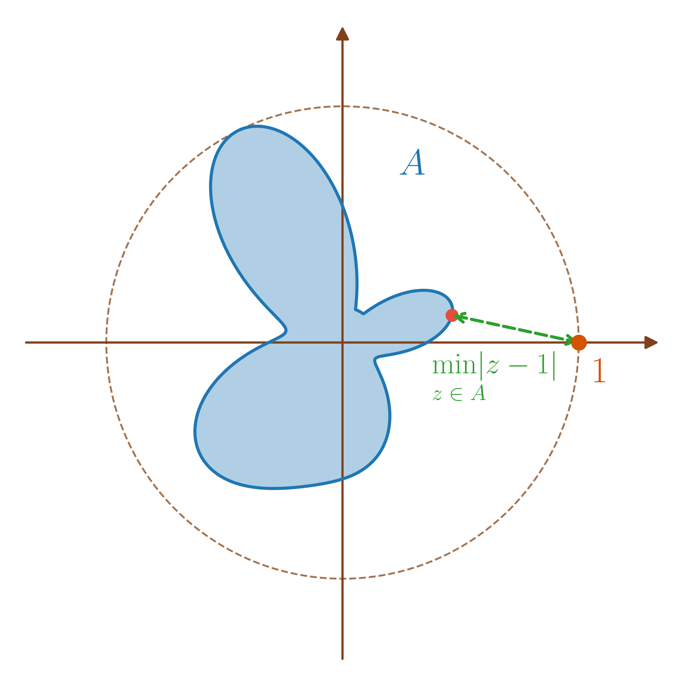
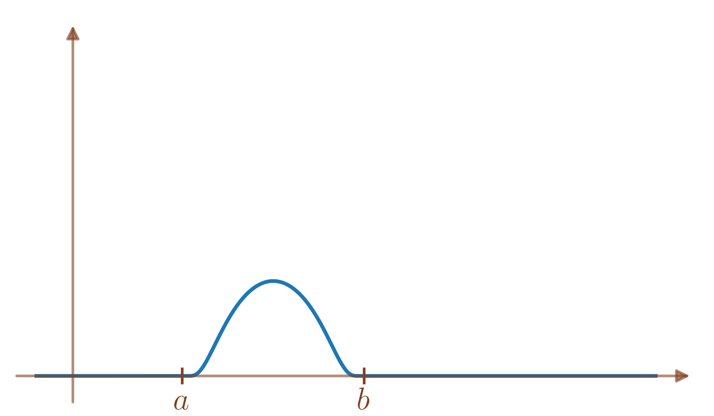
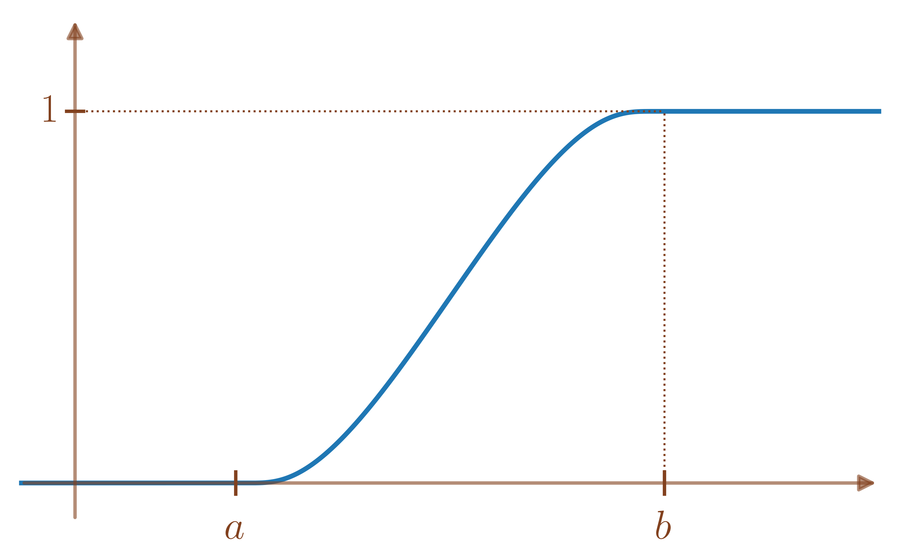
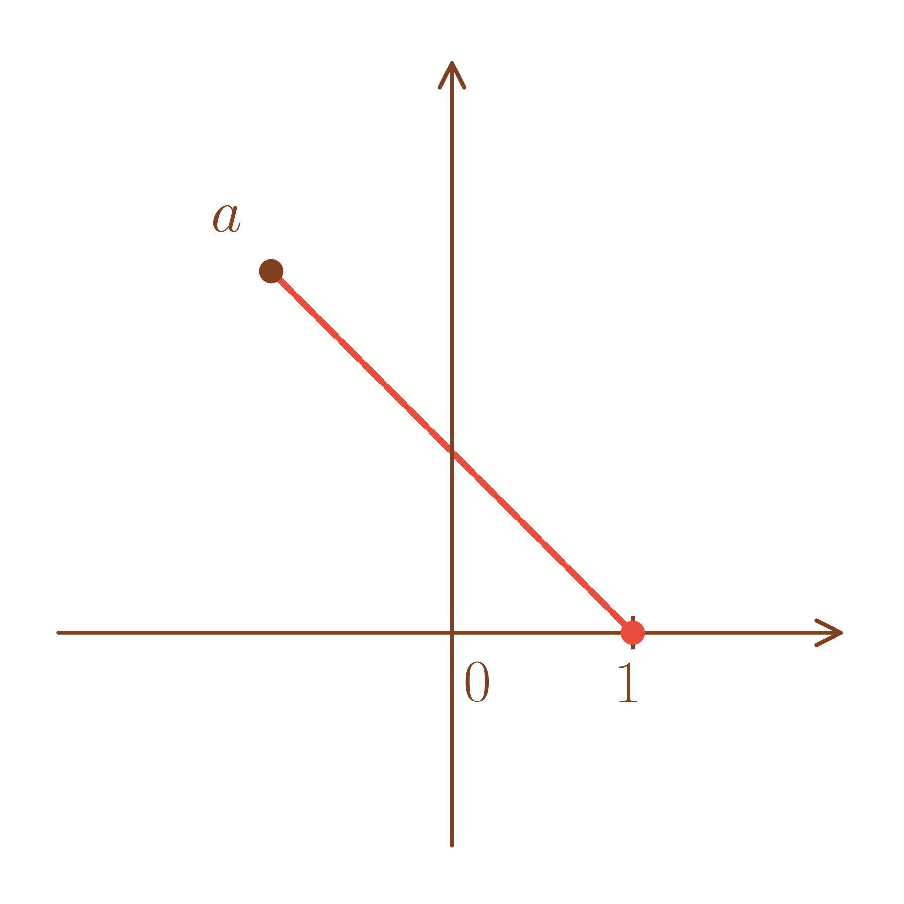
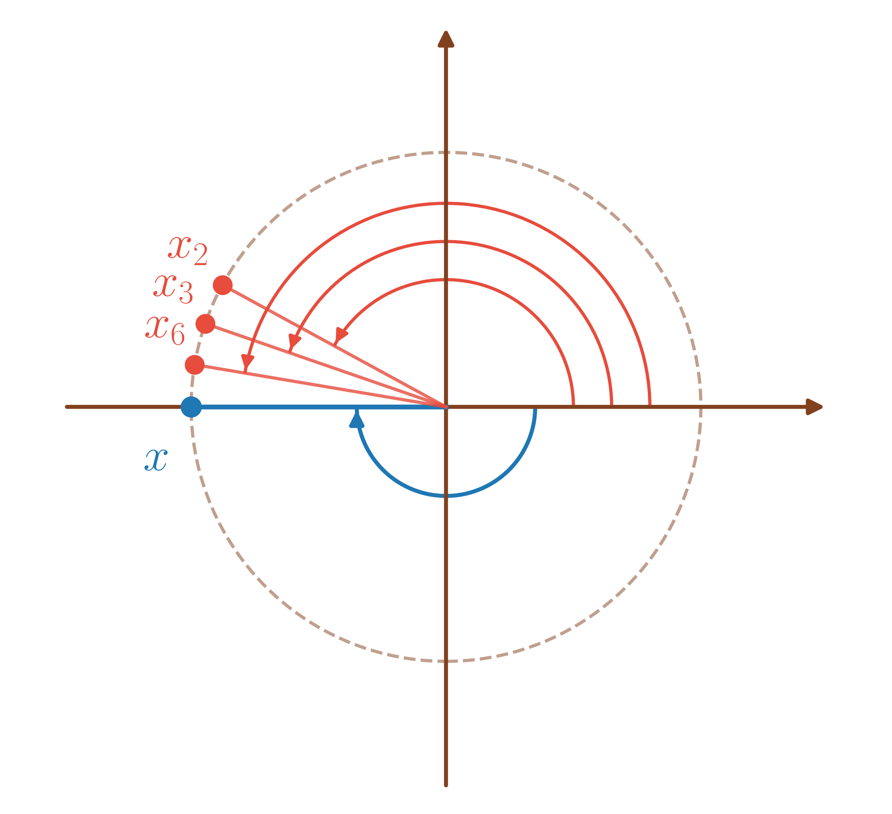
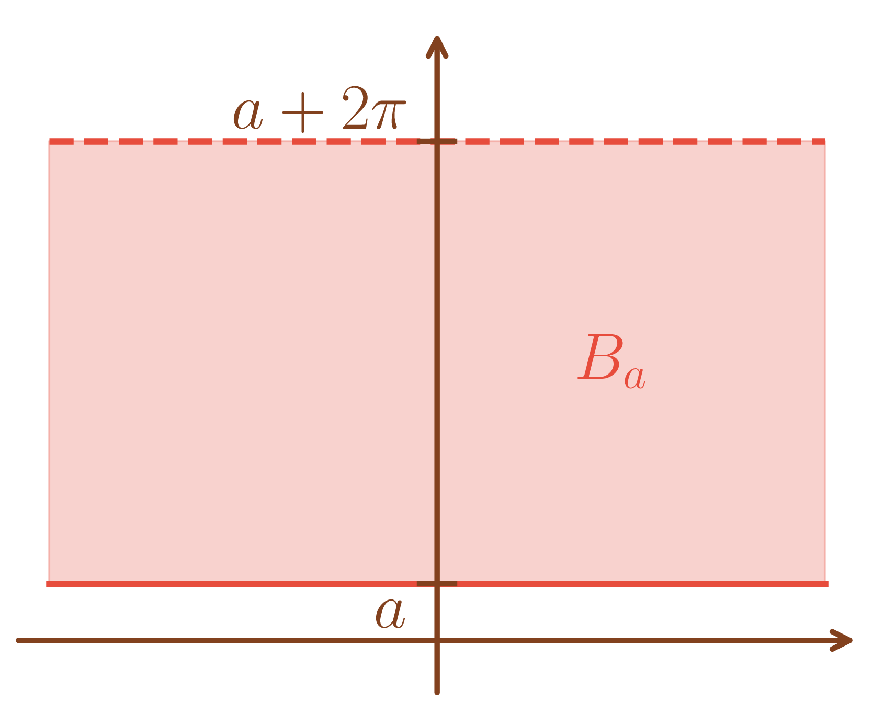

Une série entière est une série de fonctions \(\sum_{n \geq 0} f_n\) où pour \(n \in \mathbb{N},\) \(\begin{array}{lllll} f_n & : & \mathbb{C} & \to & \mathbb{C} \\ & & z & \mapsto & a_n z^n \end{array}\) avec \(a_n \in \mathbb{C}\) et pour \(n=0, z^0 = 1\) par convention.
On la note alors \(\sum_{n \geq 0} a_n z^n\) ou \(\sum a_n z^n.\)
La série exponentielle \(\sum_{n \geq 0} \frac{z^n}{n!}\) et la série géométrique \(\sum_{n \geq 0} {z^n}.\)
\(\sum_{n \geq 0} z^{n^2}\) associée à \(\left(a_n\right)_{n \geq 0}\) suite de \(\mathbb{C}\) telle que pour \(n \in \mathbb{N},\)
\(a_n = \left\{\begin{array}{ll} 1 & \mbox{ s'il existe $k \in \mathbb{N}$ tel que $n=k^2$ ($n$ est un carré)} \\ 0 & \mbox{sinon.} \end{array}\right..\)
(Lemme d’Abel) Soient \(\left(a_n\right)_{n \geq 0}\) une suite de \(\mathbb{C}\) et \(z_0 \in \mathbb{C}\) tel que \(z_0 \neq 0\) et \(\left(a_n z_0^n\right)_{n \geq 0}\) est bornée.
Alors, pour tout \(z \in \mathbb{C}\) tels que \(\left|z\right| < \left|z_0\right|,\) \(\sum_{n \geq 0} a_n z^n\) converge absolument.
Il existe \(M \in \mathbb{R}^{+}\) tel que pour tout \(n \geq 0,\) \(\left|a_n z_0^n\right| \leq M.\)
De plus, soit \(z \in \mathbb{C}\) tel que \(\left|z\right| < \left|z_0\right|\) alors pour \(n \in \mathbb{N},\) \[a_n z^n = a_n\frac{z_0^n}{z_0^n}z^n =a_n z_0^n \frac{z^n}{z_0^n} = a_n z_0^n\left(\frac{z}{z_0}\right)^n.\] donc \[\left|a_n z^n\right| = \left|a_n z_0^n\right| \left|\frac{z}{z_0}\right|^n \leq M \left|\frac{z}{z_0}\right|^n.\] Or, \(\left|\frac{z}{z_0}\right| < 1\) donc \(\sum_{n \geq 0}\left|\frac{z}{z_0}\right|^n\) converge puis \(\sum_{n \geq 0}\left|a_n z^n\right|\) converge ie \(\sum_{n \geq 0} a_n z^n\) converge absolument.
Soit \(\sum_{n \geq 0} a_n z^n\) une série entière.
Alors, il existe un unique \(R \in [0,+\infty]\) tel que
Pour tout \(z \in \mathbb{C}\) tel que \(\left|z\right| < R,\) \(\sum_{n \geq 0} a_n z^n\) converge absolument.
Pour tout \(z \in \mathbb{C}\) tel que \(\left|z\right| > R,\) \(\left(a_n z^n\right)_{n \geq 0}\) est non bornée.
Montrons l’existence puis l’unicité de \(R.\)
(Existence). Posons \(R = \sup\left\{\left|z\right|/\text{$\left(a_n z^n\right)_{n \geq 0}$ est bornée}\right\} \in [0,+\infty].\)
Si \(\left|z\right| > R,\) \(\left(a_n z^n\right)_{n \geq 0}\) est non bornée.
Si \(\left|z\right| < R,\) par propriété de la borne supérieure, il existe \(z_0 \in \mathbb{C}\) tel que \(\left|z\right| \leq \left|z_0\right| < R\) et \(z_0 \in \left\{\left|z\right|/\text{$\left(a_n z^n\right)_{n \geq 0}$ est bornée}\right\}\) donc \(\left(a_n z_0^n\right)_{n \geq 0}\) est bornée.
Donc par le lemme d’Abel (lemme [lem:lemme_Abel]), \(\sum_{n \geq 0} a_n z^n\) converge absolument.
(Unicité). Par l’absurde, supposons qu’il existe \(R' \in \mathbb{R}^{+}\) tel que \(R < R'\) et \(R'\) vérifie les mêmes propriétés que \(R.\)
Alors, soit \(z \in \mathbb{C}\) tel que \(R < \left|z\right| < R',\)
Comme \(\left|z\right| < R',\) \(\sum_{n \geq 0} a_n z^n\) converge absolument et donc \(a_nz^n \xrightarrow[n \to +\infty]{} 0.\)
Comme \(R < \left|z\right|,\) \(\left(a_n z^n\right)_{n \geq 0}\) est non bornée, ce qui est contradictoire.
Soit \(\sum_{n \geq 0} a_n z^n\) une série entière. L’unique \(R \in \mathbb{R}^{+}\) défini dans la proposition [prop:def_rayon_CV] est appelé le rayon de convergence de \(\sum_{n \geq 0} a_n z^n.\)
Pour \(\sum_{n \geq 0} n! z^n,\) \(R = 0\) car pour tout \(z \in \mathbb{C}^\star,\) \(\left|n!z^n\right| = n! \left|z\right|^n \xrightarrow[n \to +\infty]{} +\infty\) (la factorielle l’emporte sur la géométrique).
Pour \(\sum_{n \geq 0} \frac{z^n}{n!},\) \(R = +\infty\) car pour tout \(z \in \mathbb{C},\) \(\sum_{n = 0}^{+\infty} \frac{\left|z\right|^n}{n!} = e^{\left|z\right|} < +\infty.\)
Pour \(\sum_{n \geq 0} z^n,\) \(R = 1\) car \(\sum_{n \geq 0} \left|z\right|^n\) converge pour \(\left|z\right| < 1\) et \(\sum_{n \geq 0} 1^n\) diverge.
Pour \(\sum_{n \geq 1}\frac{z^n}{n^2},\) \(R = 1\) car \(\sum_{n \geq 1} \frac{\left|z\right|^n}{n^2}\) converge pour \(\left|z\right| < 1\) car alors \(\frac{\left|z\right|^n}{n^2} \leq \frac{1}{n^2}.\) En revanche, pour tout \(z \in \mathbb{C}\) tel que \(\left|z\right| > 1,\) \(\frac{abs{z}^n}{n^2} \xrightarrow[n \to +\infty]{}+\infty\) (la géométrique l’emporte sur la polynomiale).
Pour \(\sum_{n \geq 1}\frac{z^n}{n},\) \(R = 1\) car \(\sum_{n \geq 1} \frac{\left|z\right|^n}{n}\) converge pour \(\left|z\right| < 1\) car \(\frac{\left|z\right|^n}{n} = \underset{n\to +\infty}{o} \left(\left|z\right|^n\right).\) En revanche, pour \(z = 1,\) la série diverge. Notons que pour \(z=-1\) tel que \(\left|z\right| = R,\) la série converge.
\(R = 0\) signifie que \(z=0\) est le seul point où la série \(\sum_{n \geq 0} a_n z^n\) converge.
\(R = +\infty\) signifie que la série \(\sum_{n \geq 0} a_n z^n\) converge absolument pour tout \(z \in \mathbb{C}.\)
Si \(0 < R < +\infty,\) il n’y a aucun renseignement général sur la converge ou non de \(\sum_{n \geq 0} a_n z^n\) pour \(z \in \mathbb{C}\) tel que \(\left|z\right| = R.\)
Montrer que pour tout \(z \in S(0,1) \setminus \left\{1\right\},\) \(\sum_{n \geq 1}\frac{z^n}{n}\) converge.
Indication: Effectuer une transformation d’Abel.
Soit \(z \in S(0,1) \setminus \left\{1\right\},\) pour \(n \in \mathbb{N}^{\star},\) on pose \(s_n = \sum_{k=0}^n z^k\) et \(s_0 = 0\) tel que \(z^n = s_n-s_{n-1}\) pour \(n \in \mathbb{N}^{\star}.\)
Alors, pour \(N \in \mathbb{N}^{\star},\) \[\begin{aligned} \sum_{n = 1}^N \frac{z^n}{n} & = \sum_{n = 1}^N \frac{s_n-s_{n-1}}{n} \\ & = \sum_{n = 1}^N \frac{s_n}{n}-\sum_{n = 1}^N \frac{s_{n-1}}{n} \\ & = \sum_{n = 1}^N \frac{s_n}{n}-\sum_{n = 0}^{N-1} \frac{s_{n}}{n+1} \\ & = \sum_{n = 1}^N \frac{s_n}{n}-\sum_{n = 1}^{N} \frac{s_{n}}{n+1}-s_0+\frac{s_N}{N+1} \\ & = \sum_{n = 1}^N s_n\left(\frac{1}{n}-\frac{1}{n+1}\right)+\frac{s_N}{N+1}. \end{aligned}\]
Or, comme \(z \neq 1,\) \[\left|s_N\right| = \left|\frac{1-z^{N+1}}{1-z}\right| \leq \frac{1}{\left|1-z\right|}\left(1+\left|z\right|^{N+1}\right) = \frac{2}{\left|1-z\right|}.\] Donc en posant \(M = \frac{2}{\left|1-z\right|} \in \mathbb{R}^{+},\) \(\left|\frac{s_N}{N+1}\right| \leq \frac{M}{N+1} \xrightarrow[N \to +\infty]{} 0.\)
De plus, \[0 \leq \sum_{n = 1}^N \left|s_n\left(\frac{1}{n}-\frac{1}{n+1}\right)\right| \leq M\sum_{n = 1}^N \left(\frac{1}{n}-\frac{1}{n+1}\right) = M\left(1-\frac{1}{N+1}\right) \leq M.\] et \(\sum_{n \geq 1} s_n\left(\frac{1}{n}-\frac{1}{n+1}\right)\) converge absolument donc converge. Donc \(\sum_{n \geq 1}\frac{z^n}{n}\) converge.
Soient \(\sum_{n \geq 0} a_n z^n\) une série entière et \(R\) son rayon de convergence. Alors, \[\begin{aligned} R & = \sup\left\{\left|z\right| \in \mathbb{C}/ \sum_{n \geq 0} a_n z^n \text{ converge absolument}\right\} \\ & = \sup\left\{\left|z\right| \in \mathbb{C}/ \sum_{n \geq 0} a_n z^n \text{ converge}\right\} \\ & = \sup\left\{\left|z\right| \in \mathbb{C}/ a_n z^n \xrightarrow[n \to +\infty]{} 0\right\} \\ & = \sup\left\{\left|z\right| \in \mathbb{C}/ \left(a_n z^n\right)_{n \geq 0} \text{ est bornée}\right\} \\ \end{aligned}\]
\[\begin{aligned} B(0,R) & \subset \left\{z \in \mathbb{C}/ \sum_{n \geq 0} a_n z^n \text{ converge absolument}\right\} \\ & \subset \left\{z \in \mathbb{C}/ \sum_{n \geq 0} a_n z^n \text{ converge}\right\} \\ & \subset \left\{z \in \mathbb{C}/ a_n z^n \xrightarrow[n \to +\infty]{} 0\right\} \\ & \subset \left\{z \in \mathbb{C}/ \left(a_n z^n\right)_{n \geq 0} \text{ est bornée}\right\} \\ & \subset \overline{B}(0,R). \end{aligned}\]
Soit \(\sum_{n \geq 0} a_n z^n\) une série entière, \(R\) son rayon de convergence et \(z_0 \in \mathbb{C}.\)
Si \(a_n z_0^n \xrightarrow[n \to +\infty]{} 0,\) \(R \geq \left|z_0\right|,\)
Si \(\sum_{n\geq 0} a_n z_0^n\) converge absolument, \(R \geq \left|z_0\right|,\)
Si \(\sum_{n\geq 0} a_n z_0^n\) converge, \(R \geq \left|z_0\right|,\)
Si \(\left(a_n z_0^n\right)_{n \geq 0}\) est bornée, \(R \geq \left|z_0\right|,\)
Si \(a_n z_0^n \centernot{\xrightarrow[n \to +\infty]{}} 0,\) \(R \leq \left|z_0\right|,\)
Si \(\sum_{n\geq 0} \left|a_n z_0^n\right|\) diverge, \(R \leq \left|z_0\right|,\)
Si \(\sum_{n\geq 0} a_n z_0^n\) diverge, \(R \leq \left|z_0\right|,\)
Si \(\left(a_n z_0^n\right)_{n \geq 0}\) est non bornée, \(R \leq \left|z_0\right|,\)
Ceci découle directement de la proposition [prop:RCV_comme_multiples_bornes_sup].
Soit \(\left(a_n\right)_{n \geq 0}\) suite de \(\mathbb{N}\) tel que \(a_n\) vaut la \(n\)-ième décimal de \(\pi\) pour \(n \in \mathbb{N}\) (\(a_0 = 3,\) \(a_1=1,\) \(a_2 = 4,\)\(\ldots\)) et \(R\) le rayon de convergence de \(\sum_{n \geq 0} a_n z^n.\)
\(\left(a_n\right)_{n \geq 0}\) est bornée par \(9\) donc \(R \geq 1.\)
\(a_n \centernot{\xrightarrow[n \to +\infty]{}} 0\) car comme c’est une suite d’entiers, par l’absurde, si on avait \(a_n \xrightarrow[n \to +\infty]{} 0,\) on aurait \(a_n = 0\) pour \(n\) assez grand et \(\pi\) serait rationnel. Donc \(R \leq 1.\)
On en déduit alors \(R = 1\) avec d’ailleurs \(\sum_{n=0}^{+\infty}a_n \left(\frac{1}{10}\right)^n = \pi.\)
\(R > 0 \iff \exists \rho > 0\) tel que \(\left(a_n \rho^n\right)\) est bornée.
(Règle de d’Alembert (pour les séries)) Soit \(\sum u_n\) une série de \(E\) telle que \(\left(u_n\right)\) est non nulle à partir d’un certain rang. On suppose \(\frac{\left\|u_{n+1}\right\|}{\left\|u_n\right\|} \xrightarrow[n \to +\infty]{} \ell \in [0,+\infty]\) (avec donc \(\ell = +\infty\) éventuellement). Alors,
si \(\ell < 1,\) \(\sum u_n\) converge absolument,
si \(\ell > 1,\) \(\sum u_n\) diverge grossièrement avec \(\left\|u_n\right\| \xrightarrow[n \to +\infty]{} +\infty.\)
(Règle de d’Alembert) Soit \(\sum_{n \geq 0} a_n z^n\) une série entière telle que \(\left(a_n\right)_{n\geq 0}\) est non nulle à partir d’un certain rang et \(R\) son rayon de convergence.
Si \(\left|\frac{a_{n+1}}{a_n}\right|\) admet une limite \(\ell \in [0,+\infty]\) alors \(R = \frac{1}{\ell}\) (avec « \(\frac{1}{0} = +\infty\) » et « \(\frac{1}{+\infty} = 0\) »).
Pour \(z \neq 0\) et \(n \in \mathbb{N}\) tel que \(a_n \neq 0,\) \(\left|\frac{a_{n+1}z^{n+1}}{a_nz^n}\right| = \left|\frac{a_{n+1}}{a_n}\right|\left|z\right|.\)
Si \(\ell = 0,\) alors pour tout \(z \in \mathbb{C}^\star,\) \(\left|\frac{a_{n+1}z^{n+1}}{a_nz^n}\right| \xrightarrow[n \to +\infty]{} 0 < 1\) donc par la règle de d’Alembert pour les séries (rappel [rappel:regle_dalembert]), \(\sum a_n z^n\) converge absolument donc \(R = +\infty.\)
Si \(\ell = +\infty,\) alors pour tout \(z \in \mathbb{C}^\star,\) \(\left|\frac{a_{n+1}z^{n+1}}{a_nz^n}\right| \xrightarrow[n \to +\infty]{} +\infty > 1\) donc par la règle de d’Alembert pour les séries (rappel [rappel:regle_dalembert]), \(\sum a_n z^n\) diverge absolument donc \(R = 0.\)
Si \(\ell \in ]0,+\infty[,\) alors pour tout \(z \in \mathbb{C}^\star,\) \(\left|\frac{a_{n+1}z^{n+1}}{a_nz^n}\right| \xrightarrow[n \to +\infty]{} \ell\left|z\right|.\)
Si \(\left|z\right| < \frac{1}{\ell},\) \(\ell\left|z\right| < 1\) donc par la règle de d’Alembert pour les séries (rappel [rappel:regle_dalembert]), \(\sum a_n z^n\) converge absolument.
Si \(\left|z\right| > \frac{1}{\ell},\) \(\ell\left|z\right| > 1\) donc par la règle de d’Alembert pour les séries (rappel [rappel:regle_dalembert]), \(\sum a_n z^n\) diverge.
On en déduit que \(R = \frac{1}{\ell}.\)
Considérons la série entière \(\sum_{n \geq 0}\frac{n!}{n^n}z^n\) et \(a_n = \frac{n!}{n^n}\) pour \(n \in \mathbb{N}.\)
On a \(\left|\frac{a_{n+1}}{a_n}\right| = \frac{n^n}{n!}\frac{(n+1)!}{\left(n+1\right)^{n+1}}= \frac{n^n(n+1)}{\left(n+1\right)^{n}\left(n+1\right)} = \left(\frac{1}{1+\frac{1}{n}}\right)^n= \frac{1}{\left(1+\frac{1}{n}\right)^n} \xrightarrow[n \to +\infty]{} \frac{1}{e}\) donc son rayon de convergence vaut \(\frac{1}{e}.\)
Bien entendu, soit \(\sum_{n \geq 0} a_n z^n\) une série entière de rayon \(R\) avec \(\left(a_n\right)_{n \geq 0}\) non nulle à partir d’un certain rang alors \(\left(\left|\frac{a_{n+1}}{a_n}\right|\right)_{n \geq 0}\) ne converge pas nécessairement.
La règle de d’Alembert pour les séries (rappel [rappel:regle_dalembert]) est encore très utile dans certains cas.
Pour calculer le rayon de convergence de \(\sum_{n \geq 0} 4^n z^{2n},\) on pourrait appliquer naïvement la règle de d’Alembert en disant « \(\frac{4^{n+1}}{4^n} =4\xrightarrow[n \to +\infty]{} 4\) donc le rayon de convergence vaut \(\frac{1}{4}\) ». Cependant, en lisant \(\sum_{n \geq 0} 4^n z^{2n},\) il faut lire \(\sum_{n \geq 0} a_n z^n\) « pour \(n \in \mathbb{N},\) \(\left\{\begin{array}{ll} a_{2n} & = 4^n \\ a_{2n+1} & = 0 \end{array}\right..\) » et on ne peut donc pas appliquer la règle de d’Alembert car on n’a pas « \(\left(a_n\right)\) non nulle à partir d’un certain rang. »
On peut néanmoins s’en sortir avec la règle de d’Alembert pour les séries (rappel [rappel:regle_dalembert]). En effet, pour \(z \in \mathbb{C}^\star,\) \(\left|\frac{4^{n+1}z^{2(n+1)}}{4^{n}z^{2n}}\right| = 4\left|z\right|^2 \xrightarrow[n \to +\infty]{} 4\left|z\right|^2.\) Donc
Si \(4\left|z\right|^2 < 1 \iff \left|z\right| < \frac{1}{2},\) la série \(\sum_{n \geq 0} 4^n z^{2n}\) converge absolument.
Si \(4\left|z\right|^2 > 1 \iff \left|z\right| > \frac{1}{2},\) la série \(\sum_{n \geq 0} 4^n z^{2n}\) diverge grossièrement.
On en déduit donc \(R = \frac{1}{2}.\)
Soit \(\left(a_n\right)_{n \geq 0}\) définie pour \(n \in \mathbb{N}\) par \(\left\{\begin{array}{ll} a_{2n} & = 2^n \\ a_{2n+1} & = \frac{1}{2^n} \end{array}\right..\)
Calculer le rayon de convergence \(R\) de \(\sum_{n \geq 0} a_n z^n.\)
On ne peut pas appliquer la règle de d’Alembert pour les séries entières car \(\left\{\begin{array}{ll} \frac{a_{2n}}{a_{2n-1}} & = \frac{2^n}{ \frac{1}{2^{n-1}}} = 2^{2n-1} \xrightarrow[n \to +\infty]{} +\infty\\ \frac{a_{2n+1}}{a_{2n}} & = \frac{\frac{1}{2^{n+1}}}{2^n} =\frac{1}{2^{2n+1}} =\xrightarrow[n \to +\infty]{} 0 \end{array}\right.\)
En revanche, étudions les convergences de \(\sum_{n\geq 0} 2^n z^{2n}\) et \(\sum_{n\geq 0} \frac{1}{2^n} z^{2n+1}\) à l’aide la règle de d’Alembert pour les séries (rappel [rappel:regle_dalembert]).
Pour \(z \in \mathbb{C}^\star,\) et \(n \in \mathbb{N},\) \(\left|\frac{2^{n+1}z^{2(n+1)}}{2^{n}z^{2n}}\right| = 2\left|z\right|^2 \xrightarrow[n \to +\infty]{} 2\left|z\right|^2.\)
Si \(2\left|z\right|^2 < 1 \iff \left|z\right| < \frac{1}{\sqrt{2}},\) la série \(\sum_{n \geq 0} 2^n z^{2n}\) converge absolument.
Si \(2\left|z\right|^2 > 1 \iff \left|z\right| > \frac{1}{\sqrt{2}},\) la série \(\sum_{n \geq 0} 2^n z^{2n}\) diverge grossièrement.
Pour \(z \in \mathbb{C}^\star,\) et \(n \in \mathbb{N},\) \(\left|\frac{\frac{1}{2^{n+1}}z^{2(n+1)}}{\frac{1}{2^{n}}z^{2n}}\right| = \frac{1}{2}\left|z\right|^2 \xrightarrow[n \to +\infty]{} \frac{1}{2}\left|z\right|^2.\)
Si \(\frac{1}{2}\left|z\right|^2 < 1 \iff \left|z\right| < \sqrt{2},\) la série \(\sum_{n \geq 0} \frac{1}{2^n}z^{2n+1}\) converge absolument.
Si \(\frac{1}{2}\left|z\right|^2 > 1 \iff \left|z\right| > \sqrt{2},\) la série \(\sum_{n \geq 0} \frac{1}{2^n}z^{2n+1}\) diverge grossièrement.
Finalement, soit \(z \in \mathbb{C}^\star,\)
Si \(\left|z\right| < \frac{1}{\sqrt{2}} < \sqrt{2},\) \(\sum_{n \geq 0} 2^n z^{2n}\) et \(\sum_{n \geq 0} \frac{1}{2^n}z^{2n+1}\) convergent absolument donc \(\sum_{n \geq 0} a_n z^n,\) qui est la somme de ces deux séries, converge absolument et \(R \geq \frac{1}{\sqrt{2}}.\)
Si \(\frac{1}{\sqrt{2}}< \left|z\right| < \sqrt{2},\) \(\sum_{n \geq 0} 2^n z^{2n}\) converge absolument et \(\sum_{n \geq 0} \frac{1}{2^n}z^{2n+1}\) diverge grossièrement donc \(\sum_{n \geq 0} a_n z^n,\) qui est la somme de ces deux séries, diverge grossièrement et \(R \leq \frac{1}{\sqrt{2}}.\)
On en déduit donc \(R = \frac{1}{\sqrt{2}}.\)
(Comparaison des coefficients) Soient \(\sum_{n \geq 0} a_n z^n\) et \(\sum_{n \geq 0} b_n z^n\) de rayons de convergence respectifs \(R,R'.\)
S’il existe \(N \in \mathbb{N}\) tel que pour tout \(n \geq N,\) \(\left|a_n\right| \leq \left|b_n\right|\) alors \(R \geq R'.\)
Si \(a_n =\underset{n\to +\infty}{O} \left(b_n\right)\) alors \(R \geq R'.\)
Si \(a_n =\underset{n\to +\infty}{o} \left(b_n\right)\) alors \(R \geq R'.\)
Si \({a_n} \underset{n\to +\infty}{\sim}{b_n}\) alors \(R = R'.\)
Soit \(z \in \mathbb{C},\) pour tout \(n \geq N,\) \(\left|a_n\right|z^n \leq \left|b_n\right|z^n.\)
Donc si \(\left|z\right| < R',\) \(0 \leq \left|a_n\right|z^n \leq \left|b_n\right|z^n \xrightarrow[n \to +\infty]{} 0,\) ce qui donne \(\left|a_n\right|z^n \xrightarrow[n \to +\infty]{} 0\) donc \(R \geq R'.\)
Si \(a_n =\underset{n\to +\infty}{O} \left(b_n\right)\) alors il existe \(M \in \mathbb{R}^{+}\) et \(N \in \mathbb{N}\) tel que pour tout \(n \geq N,\) \(\left|a_n\right| \leq M\left|b_n\right|.\)
On a donc, par le cas précédent, \(R \geq R'.\)
Si \(a_n =\underset{n\to +\infty}{o} \left(b_n\right)\) alors \(a_n =\underset{n\to +\infty}{O} \left(b_n\right)\) donc par le cas précédent, \(R \geq R'.\)
Si \({a_n} \underset{n\to +\infty}{\sim}{b_n}\) alors \(a_n =\underset{n\to +\infty}{O} \left(b_n\right)\) donc \(R \geq R'\) et \(b_n =\underset{n\to +\infty}{O} \left(a_n\right)\) donc \(R' \geq R\) puis finalement, \(R = R'.\)
Soient \(\sum_{n \geq 0} a_n z^n\) de rayon de convergence \(R\) et \(\alpha \in \mathbb{R}.\)
Alors, \(\sum_{n \geq 0} \frac{a_n}{n^\alpha} z^n\) est de même rayon de convergence \(R.\)
Notons \(R'\) le rayon de convergence de \(\sum_{n \geq 0} \frac{a_n}{n^\alpha} z^n.\)
Soit \(z \in \mathbb{C}\) tel que \(\left|z\right| < R.\)
Soit \(\rho \in ]\left|z\right|,R[\) alors \(\left| \frac{a_n}{n^\alpha} z^n\right| = \left|a_n\right| \rho^n \left(\frac{\left|z\right|}{\rho}\right)^n \frac{1}{n^\alpha}.\)
De plus, \(\left|a_n\right| \rho^n \xrightarrow[n \to +\infty]{} 0\) car \(\rho < R\) et \(\left(\frac{\left|z\right|}{\rho}\right)^n \frac{1}{n^\alpha} \xrightarrow[n \to +\infty]{} 0\) car \(\frac{\left|z\right|}{\rho} < 1\) et la géométrique l’emporte sur la polynomiale.
Donc \(\left| \frac{a_n}{n^\alpha} z^n\right| \xrightarrow[n \to +\infty]{} 0,\) ce qui donne \(R' \geq R.\)
En faisant la même preuve que ce qui précède et en utilisant \(a_, = \frac{1}{n^{-\alpha}} \frac{a_n}{n^\alpha},\) on obtient \(R' \leq R.\)
Donc \(R = R'.\)
\(\sum a_n z^n,\) \(\sum \left|a_n\right| z^n,\) \(\sum a_{n+1} z^n\) et \(\sum a_{n-1} z^n\) ont même rayon de convergence car \[\begin{aligned} a_n z^n \xrightarrow[n \to +\infty]{} 0 & \iff \left|a_n\right| z^n \xrightarrow[n \to +\infty]{} 0 \\ & \iff a_{n+1}z^{n+1}\xrightarrow[n \to +\infty]{} 0 \iff a_{n+1}z^{n}\xrightarrow[n \to +\infty]{}0 \\ & \iff a_{n-1}z^{n}\xrightarrow[n \to +\infty]{} 0. \end{aligned}\]
Soit \(\sum_{n \geq 0} a_n z^n\) de rayon de convergence \(R.\) On note \(R'\) le rayon de convergence de \(\sum_{n \geq 0} \frac{a_n}{n!}z^n.\)
Montrer que \(R' \geq R.\)
Montrer que si \(R > 0,\) \(R' = +\infty.\)
Pour tout \(n \geq 0,\) \(\left|\frac{a_n}{n!}\right| \leq \left|a_n\right|\) donc \(R' \geq R.\)
Si \(R > 0,\) soit \(z \in \mathbb{C}\) et \(\rho \in ]0,R[.\) Alors, \(\left|\frac{a_n}{n!}z^n\right| = \left|a_n\rho^n\right| \frac{1}{n!}\left(\frac{\left|z\right|}{\rho}\right)^n.\)
Or, \(\left|a_n\rho^n\right| \xrightarrow[n \to +\infty]{} 0\) car \(\rho < R\) et \(\frac{1}{n!}\left(\frac{\left|z\right|}{\rho}\right)^n \xrightarrow[n \to +\infty]{} 0\) (car la factorielle l’emporte sur la géométrique). Donc \(\left|\frac{a_n}{n!}z^n\right| \xrightarrow[n \to +\infty]{} 0\) et \(R' = +\infty.\)
Soient \(\sum_{n \geq 0} a_n z^n\) de rayon de convergence respectif \(R\) et \(\lambda \in \mathbb{K}^\star.\)
Alors, \(\sum_{n \geq 0} \lambda a_n z^n\) est de rayon \(R.\)
Soit \(z \in \mathbb{C},\) \[a_n z^n \xrightarrow[n \to +\infty]{} 0 \iff \lambda a_n z^n \xrightarrow[n \to +\infty]{} 0 \text{ car $\lambda \neq 0$}\] donc \(R =R'.\)
Soient \(\sum_{n \geq 0} a_n z^n\) et \(\sum_{n \geq 0} b_n z^n\) de rayons de convergence respectifs \(R,R'.\)
On considère la série entière \(\sum_{n \geq 0} \left(a_n+b_n\right) z^n\) et on note \(R''\) son rayon de convergence.
Alors,
\(R'' \geq \min(R,R').\)
Si \(R \neq R',\) \(R'' = \min(R,R').\)
Soit \(z \in \mathbb{C}\) tel que \(\left|z\right| < \min(R,R').\)
Alors, \(\left|z\right| < R\) donc \(a_n z^n \xrightarrow[n \to +\infty]{} 0\) et \(\left|z\right| < R'\) donc \(b_n z^n \xrightarrow[n \to +\infty]{} 0.\)
On a donc \(\left(a_n+b_n\right) z^n \xrightarrow[n \to +\infty]{} 0\) puis \(R'' \geq \min(R,R').\)
Si \(R \neq R',\) supposons \(R < R'.\) Soit \(z \in \mathbb{C}\) tel que \(R < \left|z\right| < R'\) alors \(a_n z^n \centernot{\xrightarrow[n \to +\infty]{}} 0\) et \(b_n z^n \xrightarrow[n \to +\infty]{} 0\) donc \(\left(a_n+b_n\right) z^n \centernot{\xrightarrow[n \to +\infty]{}} 0.\)
On en déduit \(R'' \leq R= \min(R,R')\) puis \(R'' = \min(R,R').\)
Si \(R=R',\) on ne peut rien dire en général. Par exemple, avec \(\sum_{n \geq 0} a_n z^n\) de rayon \(R\) quelconque, \(\sum_{n \geq 0} \left(-a_n\right) z^n\) est aussi de rayon \(R\) et \(\sum_{n \geq 0} \left(a_n-a_n\right) z^n=\sum_{n \geq 0} 0 z^n\) est de rayon \(+\infty.\)
Soient \(\sum_{n \geq 0} a_n z^n\) et \(\sum_{n \geq 0} b_n z^n\) de rayons de convergence respectifs \(R,R'.\)
On considère \(\sum_{n \geq 0} c_n z^n\) avec \(\left(c_n\right) = \left(a_n\right) \star \left(b_n\right)\) (ie pour \(n \in \mathbb{N},\) \(c_n = \sum_{i+j=n}a_ib_j\)) et on note \(R''\) son rayon de convergence.
Alors, \(R'' \geq \min(R,R')\) et pour \(\left|z\right| < \min(R,R'),\) \(\sum_{n=0}^{+\infty} c_n z^n = \left(\sum_{n=0}^{+\infty} a_n z^n\right)\left(\sum_{n=0}^{+\infty} b_n z^n\right).\)
Remarquons que \(\left(c_n z^n\right) = \left(a_n z^n\right) \star \left(b_n z^n\right).\)
En effet, pour \(n \in \mathbb{N},\) \(\sum_{i+j=n} a_i z^i b_jz^j = \sum_{i+j=n} a_i b_jz^{i+j} = \left(\sum_{i+j=n} a_i b_j\right)z^n = c_nz^n.\)
Soit \(z \in \mathbb{C}\) tel que \(\left|z\right| < \min(R,R'),\)
\(\sum a_n z^n\) converge absolument (car \(\left|z\right| < R\)) et \(\sum b_n z^n\) converge absolument (car \(\left|z\right| < R'\)) donc (voir le cours sur les séries), \(\sum c_n z^n\) converge absolument (donc \(R'' \geq \min(R,R')\)) et \(\sum_{n=0}^{+\infty} c_n z^n = \left(\sum_{n=0}^{+\infty} a_n z^n\right)\left(\sum_{n=0}^{+\infty} b_n z^n\right).\)
\(\left\{\left(a_n\right)_{n \geq 0} \text{ telle que } \sum a_n z^n \text{a un rayon de convergence $>0$}\right\}\) est stable par combinaison linéaire et produit de convolution.
Soit \(\alpha \in \mathbb{R}, > 0,\) \(\left\{\left(a_n\right)_{n \geq 0} \text{ telle que } \sum a_n z^n \text{a un rayon de convergence $>\alpha$}\right\}\) est stable par combinaison linéaire et produit de convolution.
Dans toute cette partie, on va travailler avec \(\sum_{n \geq 0} a_n z^n\) de rayon de convergence \(> 0.\) On va étudier la propriété de sa somme \(\begin{array}{lllll} S & : & D & \to & \mathbb{C} \\ & & z & \mapsto & \sum_{n =0}^{+\infty} a_n z^n \end{array}\) définie sur \(B(0,R)\) et au plus \(\overline{B}(0,R)\) (en définissant \(B(0,+\infty) = \mathbb{C}\)).
Soient \(\sum_{n \geq 0} a_n z^n\) de rayon de convergence \(R> 0\) et \(S\) la fonction somme associée.
Alors, \(\sum_{n \geq 0} a_n z^n\) converge normalement sur tout compact de \(B(0,R)\) et par conséquent, \(S\) est continue sur \(B(0,R).\)
On note \(\begin{array}{lllll} f_n & : & \mathbb{C} & \to & \mathbb{C} \\ & & z & \mapsto & a_n z^n \end{array}\) pour \(n \in \mathbb{N}.\)
Soit \(A\) une partie compacte de \(B(0,R)\) alors \(\rho = \sup_{z \in A} \left|z\right| = \max_{z \in A} \left|z\right|\) car \(A\) est compacte et \(\begin{array}{llll} & \mathbb{C} & \to & \mathbb{C} \\ & z & \mapsto & \left|z\right| \end{array}\) est continue. On en déduit alors \(\rho < R\) et \(A \subset \overline{B}(0,\rho).\)
Pour tout \(z \in A,\) \(\left|f_n(z)\right| = \left|a_n\right|\left|z^n\right| \leq \left|a_n\right|\rho^n\) car \(A \subset \overline{B}(0,\rho).\)
Donc \(\left\|f_n\right\|_{\infty,A} \leq \left|a_n\right|\rho^n.\)
Or, \(\rho < R\) donc \(\sum_{n \geq 0}\left|a_n\right|\rho^n\) converge et donc \(\sum_{n \geq 0} f_n\) converge normalement sur \(A.\)
De plus, pour tout \(n \in \mathbb{N},\) \(f_n\) est continue donc \(S\) est continue sur \(B(0,R).\)
Si \(R = +\infty,\) \(S\) est continue sur \(\mathbb{C}.\)
En général, il n’y a pas convergence normale ni même uniforme sur \(B(0,R).\)
\(\sum_{n \geq 0} z^n\) est de rayon \(1.\)
Or, \(\left\|f_n\right\|_{\infty,B(0,1)} = \sup_{z \in B(0,1)} z^n = 1 \centernot{\xrightarrow[n \to +\infty]{}} 0.\)
Donc il n’y a pas convergence uniforme de \(\sum_{n \geq 0} z^n\) sur \(B(0,1).\)
Si \(R = +\infty,\) il y a très rarement convergence uniforme sur \(\mathbb{C}.\)
En effet, pour \(n \in \mathbb{N},\) \(\left\|f_n\right\|_{\infty,\mathbb{C}} =\sup_{z \in \mathbb{C}} \left|a_n\right|\left|z\right|^n = \left\{ \begin{array}{ll} +\infty & \mbox{ si $a_n \neq 0$} \\ 0 & \mbox{si $a_n = 0$} \end{array} \right..\) Il y a donc convergence uniforme si et seulement si \(\left(a_n\right)\) est nulle à partir d’un certain rang ou autrement dit, \(S\) est une fonction polynôme.
Soient \(\sum_{n \geq 0} a_n z^n\) de rayon de convergence \(0 < R < +\infty\) et \(S\) la fonction somme associée.
Si \(\sum_{n \geq 0} \left|a_n\right|R^n\) converge alors \(\sum_{n \geq 0} a_n z^n\) converge normalement sur \(\overline{B}(0,R)\) donc \(S\) est continue sur \(\overline{B}(0,R).\)
On note \(\begin{array}{lllll} f_n & : & \mathbb{C} & \to & \mathbb{C} \\ & & z & \mapsto & a_n z^n \end{array}\) pour \(n \in \mathbb{N}.\)
On a \(\left\|f_n\right\|_{\infty,\overline{B}(0,R)} = \sup_{z \in \overline{B}(0,R)}\left|a_n\right|\left|z^n\right| = \left|a_n\right|R^n\) donc \(\sum_{n \geq 0} \left\|f_n\right\|_{\infty,\overline{B}(0,R)}\) converge ie \(\sum_{n \geq 0} f_n\) converge normalement sur \(\overline{B}(0,R)\) et comme chaque \(f_n\) est continue, \(S\) est continue sur \(\overline{B}(0,R).\)
La somme de \(\sum_{n \geq 0} \frac{z^n}{n^2}\) est continue sur \(\overline{B}(0,1).\)
Si \(\sum_{n \geq 0} \left|a_n\right|R^n\) diverge, il faut faire une étude distincte pour étudier la continuité de la somme sur les points du cercle.
Soit \(\alpha \in \mathbb{R},\) on considère la série entière \(\sum_{n \geq 1} \frac{z^n}{n^\alpha}\) de rayon \(1.\)
Etudier le domaine de définition et de continuité de la somme \(\begin{array}{lllll} S & : & D & \to & \mathbb{C} \\ & & z & \mapsto & \sum_{n =0}^{+\infty} \frac{z^n}{n^\alpha} \end{array}\) associée.
Si \(\alpha \geq 0,\) \(\frac{1}{n^\alpha} \centernot{\xrightarrow[n \to +\infty]{}} 0\) donc \(S\) est uniquement définie sur \(B(0,1)\) et y est continue par la proposition [prop:continuite_somme_SE_boule_ouverte].
Si \(\alpha > 1,\) \(\sum \frac{1}{n^\alpha}\) est une série de Riemann qui converge donc par la proposition [prop:continuite_somme_SE_boule_fermee_si_CV], \(S\) est définie sur \(\overline{B}(0,1)\) et y est continue.
Si \(0 < \alpha < 1.\)
\(S\) n’est pas définie en \(1\) car \(\sum_{n=1}^{+\infty} = \frac{1}{n^\alpha} = +\infty\) pour \(0 < \alpha < 1.\) Sur le modèle de l’exercice [exoc:etude_définition_serie_entiere_alternee_via_Abel], commençons par montrer que \(S\) est définie sur \(S(0,1) \setminus \left\{1\right\}\) en utilisant une transformation d’Abel.
Soit \(z \in S(0,1) \setminus \left\{1\right\},\) pour \(n \in \mathbb{N}^{\star},\) on pose \(s_n = \sum_{k=0}^n z^k\) et \(s_0 = 0\) tel que \(z^n = s_n-s_{n-1}\) pour \(n \in \mathbb{N}^{\star}.\)
Alors, pour \(N \in \mathbb{N}^{\star},\) \[\begin{aligned} \sum_{n = 1}^N \frac{z^n}{n^\alpha} & = \sum_{n = 1}^N \frac{s_n-s_{n-1}}{n^\alpha} \\ & = \sum_{n = 1}^N \frac{s_n}{n^\alpha}-\sum_{n = 1}^N \frac{s_{n-1}}{n^\alpha} \\ & = \sum_{n = 1}^N \frac{s_n}{n^\alpha}-\sum_{n = 0}^{N-1} \frac{s_{n}}{\left(n+1\right)^\alpha} \\ & = \sum_{n = 1}^N \frac{s_n}{n^\alpha}-\sum_{n = 1}^{N} \frac{s_{n}}{\left(n+1\right)^\alpha}-s_0+\frac{s_N}{\left(N+1\right)^\alpha} \\ & = \sum_{n = 1}^N s_n\left(\frac{1}{n^\alpha}-\frac{1}{\left(n+1\right)^\alpha}\right)+\frac{s_N}{\left(N+1\right)^\alpha}. \end{aligned}\]
Or, comme \(z \neq 1,\) \[\left|s_N\right| = \left|\frac{1-z^{N+1}}{1-z}\right| \leq \frac{1}{\left|1-z\right|}\left(1+\left|z\right|^{n+1}\right) = \frac{1}{\left|1-z\right|}.\] Donc en posant \(M = \frac{1}{\left|1-z\right|} \in \mathbb{R}^{+},\) \(\left|\frac{s_N}{\left(N+1\right)^\alpha}\right| \leq \frac{M}{\left(N+1\right)^\alpha} \xrightarrow[N \to +\infty]{} 0.\)
De plus, \[0 \leq \sum_{n = 1}^N \left|s_n\left(\frac{1}{n^\alpha}-\frac{1}{\left(n+1\right)^\alpha}\right)\right| \leq M\sum_{n = 1}^N \left(\frac{1}{n^\alpha}-\frac{1}{\left(n+1\right)^\alpha}\right) = M(1-\frac{1}{\left(N+1\right)^\alpha}) < 2M.\] et \(\sum_{n \geq 1} s_n\left(\frac{1}{n^\alpha}-\frac{1}{\left(n+1\right)^\alpha}\right)\) converge absolument donc converge. Donc \(\sum_{n \geq 1}\frac{z^n}{n^\alpha}\) converge.
Montrons maintenant que \(S\) est effectivement continue sur \(\overline{B}(0,1) \setminus\left\{1\right\}.\)
On considère un compact \(A \subset \overline{B}(0,1) \setminus\left\{1\right\}.\)
Pour \(n \in \mathbb{N}^{\star},\) on note \(\begin{array}{lllll} s_n & : & \overline{B}(0,1) \setminus\left\{1\right\} & \to & \mathbb{C} \\ & & z & \mapsto & \sum_{k=0}^n z^k = \frac{1-z^{n+1}}{1-z} \end{array}\) et \(\begin{array}{lllll} g_n & : & \mathbb{C} & \to & \mathbb{C} \\ & & z & \mapsto & s_n(z){\left(\frac{1}{n^\alpha}-\frac{1}{\left(n+1\right)^\alpha}\right)} \end{array} .\)
Par ce qui précède, pour \(N \in \mathbb{N}^{\star},\) \(z \in A,\) \(\sum_{n = 1}^N \frac{z^n}{n^\alpha} = \sum_{n = 1}^N g_n(z)+\frac{s_N(z)}{\left(N+1\right)^\alpha}.\)
On va montrer que la suite de fonctions \(\left(\sum_{n = 1}^N g_n+\frac{s_N}{\left(N+1\right)^\alpha}\right)_{N \geq 1}\) converge uniformément sur \(A\) et on aura donc que sa limite \(S\) est continue (chaque fonction étant continue).
\(\begin{array}{llll} & \mathbb{C} & \to & \mathbb{R}^{+} \\ & z & \mapsto & \left|z-1\right| \end{array}\) est continue sur le compact \(A\) donc elle atteint son minimum. De plus, pour tout \(z \in A,\) \(\left|z-1\right| > 0\) donc ce minimum est strictement positif et on le note \(m > 0.\)
On a donc pour tout \(z \in A,\) \(\frac{1}{\left|z-1\right|} \leq \frac{1}{m}\) et on note \(M = \frac{1}{m} > 0.\)
Pour tout \(z \in A\) et \(N \in \mathbb{N}^{\star},\) \[\frac{\left|s_N(z)\right|}{\left(N+1\right)^\alpha} = \frac{1}{\left(N+1\right)^\alpha}\frac{\left|1-z^{N+1}\right|}{1-z} \leq \frac{2}{M}\frac{1}{\left(N+1\right)^\alpha}.\]
Donc \(\left\|\frac{\left|s_N\right|}{\left(N+1\right)^\alpha}\right\|_{\infty,A} \leq \frac{2}{M}\frac{1}{\left(N+1\right)^\alpha}\) et \(\frac{s_N}{\left(N+1\right)^\alpha} \xrightarrow[{A}]{\text{CVU}} 0.\)

De plus, pour \(z \in A\) et \(n \in \mathbb{N}^{\star},\) \[\left| g_n(z)\right| = \left|s_n(z)\right| \left(\frac{1}{n^\alpha}-\frac{1}{\left(n+1\right)^\alpha}\right) \leq \frac{2}{M}\left(\frac{1}{n^\alpha}-\frac{1}{\left(n+1\right)^\alpha}\right).\] Donc \(\left\|g_n\right\|_{\infty,A} \leq \frac{2}{M}\left(\frac{1}{n^\alpha}-\frac{1}{\left(n+1\right)^\alpha}\right)\) et \(\sum g_n\) converge normalement sur \(A.\) On en déduit donc que \(\sum g_n\) converge uniformément sur \(A\) ie la suite de fonction \(\left(\sum_{n=1}^Ng_n\right)_{N \geq 1}\) converge uniformément sur \(A.\)
Donc, effectivement la suite de fonctions \(\left(\sum_{n = 1}^N g_n+\frac{s_N}{\left(N+1\right)^\alpha}\right)_{N \geq 1}\) converge uniformément sur \(A.\)
Puis, comme pour chaque \(N \in \mathbb{N}^{\star},\)\(\sum_{n = 1}^N g_n+\frac{s_N}{\left(N+1\right)^\alpha}\) est continue, on en déduit que \(S\) est continue sur \(\overline{B}(0,1) \setminus \left\{1\right\}.\)
On aurait pu aussi étudier la convergence uniforme du reste de la série entière qui s’écrit \(R_N(z) = \sum_{n = N+1}^{+\infty} g_n(z)-\frac{s_N(z)}{\left(N+1\right)^\alpha}\) pour \(N \in \mathbb{N}^{\star}.\)
Soient \(\sum_{n \geq 0} a_n z^n\) de rayon de convergence \(R> 0\) et \(S\) la fonction somme associée.
Alors, soit \(n \in \mathbb{N},\) \[\begin{aligned} S(z) &= a_0+a_1z+\ldots+a_{n-1}z^{n-1} +a_n z^n +\underset{z\to 0}{O}\left(z^{n+1}\right) \\ & = a_0+a_1z+\ldots+a_{n-1}z^{n-1} +a_n z^n +\underset{z\to 0}{o}\left(z^{n}\right) \\ \end{aligned}\]
Soit \(z \in \mathbb{C}\) tel que \(\left|z\right| < R\) et \(n \in \mathbb{N}\) alors
\(S(z) = S_n(z) + R_n(z)= S_n(z) + \sum_{k=n+1}^{+\infty} a_k z^k.\)
Or, \(R_n(z) = z^{n+1} \sum_{k=n+1}^{+\infty} a_kz^{k-n+1} = z^{n+1} \sum_{j=0}^{+\infty} a_{j+n+1}z^{j}\) et on note \(T(z) = \sum_{j=0}^{+\infty} a_{j+n+1}z^{j}.\)
Il s’agit de montrer que \(T\) est bornée autour de \(0.\) Or, \(\sum_{j\geq 0}a_{j+n+1}z^{j}\) a pour rayon de convergence \(R\) (voir la remarque [rem:RCV_et_Decalage_indice]). Donc, par la proposition [prop:continuite_somme_SE_boule_ouverte], \(T\) est continue sur \(B(0,R)\) donc continue en \(0\) et \(T(z) \xrightarrow[z \to 0]{} T(0) = a_{n+1}.\)
Donc \(T(z) = \underset{z\to 0}{O}\left(1\right)\) puis \(z^{n+1}T(z) = \underset{z\to 0}{O}\left(z^{n+1}\right)\) donc \(S(z) = S_n(z)+\underset{z\to 0}{O}\left(z^{n+1}\right) = a_0+a_1z+\ldots+a_{n-1}z^{n-1} +a_n z^n +\underset{z\to 0}{O}\left(z^{n+1}\right).\)
De plus, on sait qu’un \(\underset{z\to 0}{O}\left(z^{n+1}\right)\) est un \(\underset{z\to 0}{o}\left(z^{n}\right)\) donc \(S(z) = a_0+a_1z+\ldots+a_{n-1}z^{n-1} +a_n z^n +\underset{z\to 0}{o}\left(z^{n}\right).\)
Pour \(z \in \mathbb{C}\) tel que \(\left|z\right| < 0\) et \(n \in \mathbb{N},\) \(\frac{1}{1-z} = \sum_{k=0}^{+\infty}z^k = 1+z+z^2+\ldots+z^n + \underset{z\to 0}{O}\left(z^{n+1}\right)\) donc a fortiori, pour \(t \in \mathbb{R},\) \(\frac{1}{1-t} = 1+t+t^2+\ldots+t^n + \underset{t\to 0}{O}\left(t^{n+1}\right)\)
Soient \(\sum_{n \geq 0} a_n z^n\) de rayon de convergence \(R> 0\) et \(S\) la fonction somme associée.
On suppose qu’il existe \(n \in \mathbb{N}\) tel que \(a_n \neq 0\) et on note \(N= \min \left\{n \in \mathbb{N}/ a_n \neq 0\right\}.\)
Alors, \(S(z) \underset{z\to 0}{\sim} a_Nz^N.\)
Par la proposition [prop:dl_somme_SE], \[\begin{aligned} S(z) & = \underbrace{a_0}_{=0}+\underbrace{a_1}_{=0}z+\ldots+\underbrace{a_{N-1}}_{=0}z^{N-1} +\underbrace{a_N}_{ \neq 0} z^N +\underset{z\to 0}{o}\left(z^{N}\right) \\ & = \underbrace{a_N}_{ \neq 0} z^N +\underset{z\to 0}{o}\left(z^{N}\right) \\ & \underset{z\to 0}{\sim} a_Nz^N. \end{aligned}\]
Soient \(\sum_{n \geq 0} a_n z^n\) et \(\sum_{n \geq 0} b_n z^n\) de rayons de convergence respectifs \(R> 0\) et \(R'> 0\) et \(S,T\) les fonctions somme associées.
On suppose qu’il existe \(\alpha > 0\) tel que \(S=T\) sur \(]0,\alpha[ \subset \mathbb{R}.\)
Alors, pour tout \(n \in \mathbb{N},\) \(a_n=b_n\) (donc \(R = R'\) et \(S = T\)).
Par l’absurde, supposons qu’il existe \(n \in \mathbb{N}\) tel que \(a_n\neq b_n.\) On note \(N = \min \left\{n \in \mathbb{N}/ a_n\neq b_n\right\}.\)
Pour \(z \in \mathbb{C}^\star\) tel que \(\left|z\right| < \min(R,R'),\) \[S(z)-T(z) = \sum_{n=0}^{+\infty} \left(a_n-b_n\right)z^n =\sum_{n=N}^{+\infty} \left(a_n-b_n\right)z^n \underset{z\to 0}{\sim} \left(a_N-b_N\right)z^N\] par le corollaire [cor:equivalente_somme_SE_en_zero]. Donc \(\frac{S(z)-T(z)}{z^{N}} \underset{z\to 0}{\sim} a_N-b_N \neq 0\) ie \(\frac{S(z)-T(z)}{z^{N}} \xrightarrow[z \to 0]{} a_N-b_N \neq 0\) ce qui est une contradiction car pour tout \(x \in ]0,\alpha[,\) \(\frac{S(x)-T(x)}{x^{N}}= 0.\)
\[\begin{aligned} S \text{ paire} & \iff \forall n \in \mathbb{N}, a_{2n+1} = 0, \\ S \text{ impaire} & \iff \forall n \in \mathbb{N}, a_{2n} = 0. \end{aligned}\]
On donne la preuve dans le cas pair, qui est directement adaptable au cas impair.
\((\Longleftarrow).\) Si pour tout \(n \in \mathbb{N},\) \(a_{2n+1} = 0,\)
pour \(z \in B(0,R)\) tel que \(S(-z) = \sum_{n=0}^{+\infty} a_{2n}(-z)^{2n} = \sum_{n=0}^{+\infty} a_{2n}z^{2n} = S(z).\)
\((\Longrightarrow).\) Si \(S\) est paire, alors pour \(x \in ]0,R[,\) \(S(x) = \sum_{n=0}^{+\infty} a_nx^n = S(x) = \sum_{n=0}^{+\infty} a_n(-x)^n = \sum_{n=0}^{+\infty} (-1)^na_nx^n = S(-x).\)
Donc, par la proposition [prop:egalite_somme_autour_de_zero_donc_egalite_SE], \[\begin{aligned} \forall n \in \mathbb{N}, a_n = (-1)^n a_n & \iff \forall n \in \mathbb{N}, \left\{\begin{array}{ll} a_{2n}& = (-1)^{2n}a_{2n} \\ a_{2n+1}& = (-1)^{2n+1}a_{2n+1} \end{array} \right. \\ & \iff \forall n \in \mathbb{N}, \left\{\begin{array}{ll} a_{2n}& = a_{2n} \\ a_{2n+1}& = -a_{2n+1} \end{array} \right. \\ & \iff \forall n \in \mathbb{N}, a_{2n+1} = 0. \end{aligned}\]
Soient \(\sum_{n \geq 0} a_n z^n\) de rayon de convergence \(R> 0\) et \(S\) la fonction somme associée. Alors, on peut considérer la fonction de variable réelle \(\begin{array}{lllll} S & : & ]-R,R[ & \to & \mathbb{C} \\ & & x & \mapsto & \sum_{n = 0}^{+\infty} a_n x^n \end{array}\) (et éventuellement aussi en \(-R\) et \(R\) si convergence). On sait de plus que \(S\) est continue sur \(]-R,R[\) et on va étudier dans cette partie sa dérivabilité.
Soient \(\sum_{n \geq 0} a_n z^n\) de rayon de convergence \(R> 0\) et \(S\) la fonction somme associée.
Alors, \(S\) est de classe \(\mathscr{C}^\infty\) sur \(]-R,R[\) avec pour tout \(p \in \mathbb{N}\) et \(x \in ]-R,R[,\) \[\begin{aligned} S^{(p)}(x) & = \sum_{\underline{n=p}}^{+\infty} n(n-1)\ldots (n-(p-1)) a_n x^{n-p} \\ & = \sum_{\underline{n=p}}^{+\infty} n(n-1)\ldots (n-p+1) a_n x^{n-p} \\ & = \sum_{\underline{n=0}}^{+\infty} (n+p)(n+p-1)\ldots (n+1) a_{n+p} x^{n} \\ & = \sum_{\underline{n=0}}^{+\infty} \frac{(n+p)!}{n!} a_{n+p} x^{n} \end{aligned}\] donc \(a_n = \frac{S^{(n)}(0)}{n!}.\)
Pour \(n \in \mathbb{N},\) on pose \(\begin{array}{lllll} f_n & : & \mathbb{R} & \to & \mathbb{C} \\ & & x & \mapsto & a_n x^n \end{array}\) qui est de classe \(\mathscr{C}^\infty\) sur \(\mathbb{R}.\) De plus, pour \(x \in \mathbb{R},\) \[\begin{aligned} f_n'(x)& = n a_nx^{n-1} \\ f_n''(x) &= n(n-1) a_nx^{n-2}\\ \vdots & \\ f_n^{(n)}(x) & = n(n-1)\ldots 1 a_n x^{n-n} = n! a_n \\ f_n^{(p)}(x) & = 0 \text{ pour $p \geq n+1.$} \\ \end{aligned}\] Soit \(p \in \mathbb{N},\) montrons la convergence normale de \(\sum_{n \geq 0} f_n^{(p)}\) sur tout compact de \(]-R,R[\) pour en déduire que \(S\) est \(\mathscr{C}^\infty\) sur \(]-R,R[.\)
Soit \([a,b] \subset ]-R,R[\) alors \(\left|a\right| < R\) et \(\left|b\right| < R.\) On note \(c = \max(\left|a\right|,\left|b\right|) < R.\) De plus, pour tout \(x \in [a,b],\) \[\begin{aligned} \left|f_n^{(p)}(x)\right| & = \left\{ \begin{array}{ll} n(n-1)\ldots (n-p+1) \left|a_n\right| \left|x\right|^{n-p} & \mbox{ si $p \leq n$}\\ 0 & \mbox{ si $p \geq n+1.$} \end{array} \right. \\ & \leq \left\{\begin{array}{ll} n(n-1)\ldots (n-p+1) \left|a_n\right| \left|c\right|^{n-p} & \mbox{ si $p \leq n$}\\ 0 & \mbox{ si $p \geq n+1.$} \end{array} \right. \\ & \leq \left\{\begin{array}{ll} n^p\left|a_n\right| \left|c\right|^{n-p} & \mbox{ si $p \leq n$}\\ 0 & \mbox{ si $p \geq n+1.$} \end{array} \right. \\ \end{aligned}\]
Donc \[\left\|f_n^{(p)}\right\|_{\infty,[a,b]}\leq \left\{\begin{array}{ll} n^p \left|a_n\right| \left|c\right|^{n-p} & \mbox{ si $p \leq n$}\\ 0 & \mbox{ si $p \geq n+1.$} \end{array} \right..\] Or, soit \(p \leq n,\) par la proposition [prop:RCV_serie_Riemann_alteree], \(\sum_{n \geq 0}n^p \left|a_n\right| \left|z\right|^{n-p}\) est de rayon de convergence \(R.\) Donc \(\sum_{n \geq 0}n^p \left|a_n\right| c^{n-p}\) converge et donc pour tout \(p \in \mathbb{N},\) \(\sum_{n \geq 0} f_n^{(p)}\) converge normalement sur \([a,b].\)
On en déduit donc que \(S\) est de classe \(\mathscr{C}^\infty\) sur \(]-R,R[\) avec pour \(x \in ]-R,R[\) et \(p \in \mathbb{N},\) \[\begin{aligned} S^{(p)}(x) & = \sum_{n=0}^{p-1} \underbrace{f_n^{(p)}(x)}_{= 0} + \sum_{n=p}^{+\infty} {f_n^{(p)}(x)} \\ & = \sum_{n=p}^{+\infty}n(n-1)\ldots (n-p+1) \left|a_n\right| \left|x\right|^{n-p} \\ & = \sum_{\underline{n=0}}^{+\infty} (n+p)(n+p-1)\ldots (n+1) a_{n+p} x^{n} \text{ par changement d'indice.} \\ & = \sum_{\underline{n=0}}^{+\infty} \frac{(n+p)!}{n!} a_{n+p} x^{n} \end{aligned}\] et \(S^(p)(0) = \frac{(0+p)!}{0!} a_{0+p} x^{0} = p!a_p.\)
La série entière \(\sum_{n \geq 0} (n+p)(n+p-1)\ldots (n+1) a_{n+p} z^{n}\) est appelée la série entière dérivée \(p\)-ième de \(\sum_{n \geq 0} a_nz^n.\) Son rayon de convergence est aussi \(R\) par la proposition [prop:RCV_serie_Riemann_alteree] car il est celui de \(\sum_{n \geq 0}n^p a_{n+p}z^n.\)
Appliquons la proposition [prop:derivation_somme_SE] à la série géométrique. Pour \(x \in ]-1,1[,\) \(\frac{1}{1-x} = \sum_{n=0}^{+\infty} x^n.\) On en déduit \[\begin{array}{l} \text{en dérivant une fois,} \\ \forall x \in ]-1,1[ , \frac{1}{\left(1-x\right)^2} = \sum_{n=1}^{+\infty}nx^{n-1} = \sum_{n=0}^{+\infty}(n+1)x^{n} \\ \text{en dérivant deux fois,} \\ \forall x \in ]-1,1[ , \frac{2}{\left(1-x\right)^3} = \sum_{n=2}^{+\infty}n(n-1)x^{n-2} = \sum_{n=0}^{+\infty}(n+2)(n+1)x^{n} \\ \vdots \\ \text{en dérivant $p$ fois ($p \in \mathbb{N}$),} \\ \forall x \in ]-1,1[ , \frac{p!}{\left(1-x\right)^{p+1}} = \sum_{n=p}^{+\infty}n(n-1)\ldots (n+p-1)x^{n-2} = \sum_{n=0}^{+\infty}(n+p)\ldots(n+1)x^{n} \\ \end{array}\]
Donc pour \(p \in \mathbb{N}\) et \(x \in ]-1,1[,\)
\(\frac{p!}{\left(1-x\right)^{p+1}} = \sum_{n=0}^{+\infty}\frac{\left(n+p\right)!}{n!}x^{n}\) puis \(\frac{1}{\left(1-x\right)^{p+1}} = \sum_{n=0}^{+\infty}\frac{\left(n+p\right)!}{p!n!}x^{n} = \sum_{n=0}^{+\infty}\binom{n+p}{p}x^{n}.\)
Soient \(\sum_{n \geq 0} a_n z^n\) de rayon de convergence \(R> 0\) et \(S\) la fonction somme associée.
Soit \([a,b] \subset ]-R,R[\) alors \[\int_a^b S(t) dt = \int_a^b \left(\sum_{n=0}^{+\infty} a_nt^n\right)dt = \sum_{n=0}^{+\infty} a_n \int_a^b t^ndt =\sum_{n=0}^{+\infty} \frac{a_n}{n+1} \left(b^{n+1}-a^{n+1}\right).\]
\([a,b]\) est un compact inclus dans \(B(0,R)\) donc par la proposition [prop:continuite_somme_SE_boule_ouverte], \(\sum_{n \geq 0} f_n\) converge normalement sur \([a,b]\) et \(\int_a^b\left(\sum_{n=0}^{+\infty} f_n(t)\right)dt = \sum_{n=0}^{+\infty}\int_a^bf_n(t)dt.\)
De plus, pour \(n \in \mathbb{N},\) on a \(\int_a^bf_n(t)dt =\int_a^ba_nt^ndt = \frac{a_n}{n+1}\left[t^{n+1}\right]_a^b = \frac{a_n}{n+1} \left(b^{n+1}-a^{n+1}\right).\)
Soient \(\sum_{n \geq 0} a_n z^n\) de rayon de convergence \(R> 0\) et \(S\) la fonction somme associée.
Alors, \(\begin{array}{lllll} T & : & ]-R,R[ & \to & \mathbb{R} \\ & & x & \mapsto & \sum_{n=0}^{+\infty} \frac{a_n}{n+1} x^{n+1}=\sum_{n=1}^{+\infty} \frac{a_{n-1}}{n} x^{n} \end{array}\) est la primitive de \(S\) sur \(]-R,R[\) qui s’annule en \(0.\)
Par la proposition [prop:integration_somme_SE], pour \(x \in ]-R,R[,\) \[\int_0^x S(t)dt = \sum_{n =0}^{+\infty} a_n\int_0^x t^{n}dt = \sum_{n =0}^{+\infty} \frac{a_n}{n+1}x^{n+1} = T(x).\]
Pour \(x \in ]-1,1[,\) \(\frac{1}{1-x} = \sum_{n=0}^{+\infty} x^n\) donc en primitivant (par la primitive nulle en \(0\)), pour \(x \in ]-1,1[,\) \[-\ln(1-x) = \sum_{n=0}^{+\infty} \frac{x^{n+1}}{n+1} = \sum_{n=1}^{+\infty} \frac{x^n}{n} \iff \ln(1-x) = -\sum_{n=1}^{+\infty} \frac{x^n}{n}.\]
Pour \(x \in ]-1,1[,\) \(\frac{1}{1+x} = \sum_{n=0}^{+\infty} \left(-1\right)^n x^n\) donc en primitivant (par la primitive nulle en \(0\)), pour \(x \in ]-1,1[,\) \[\ln(1+x) = \sum_{n=0}^{+\infty} \left(-1\right)^n \frac{x^{n+1}}{n+1} = \sum_{n=1}^{+\infty} \frac{(-1)^{n-1}}{n}x^n.\]
Pour \(x \in ]-1,1[,\) \(\frac{1}{1+x^2} = \sum_{n=0}^{+\infty} \left(-1\right)^n x^{2n}\) donc en primitivant (par la primitive nulle en \(0\)), pour \(x \in ]-1,1[,\) \[\mathop{\mathrm{Arctan}}(x) = \sum_{n=0}^{+\infty} \left(-1\right)^n \frac{x^{2n+1}}{2n+1}.\]
On considère \(\sum_{n \geq 0} \frac{(-1)^n 2^{3n}z^{3n+1}}{3n+1}\) de rayon de convergence \(R\) et de somme \(S.\)
Déterminer \(R.\)
Exprimer simplement \(S'\) sur \(]-R,R[.\)
En primitivant \(S'\) (sans utiliser les séries entières), exprimer simplement \(S.\)
Similairement à l’exercice [exoc:utilisation_regle_dalembert_serie] et à l’exemple [ex:utilisation_regle_dalembert_serie], on utilise la règle de d’Alembert pour les séries (rappel [rappel:regle_dalembert]). Soit \(z \in \mathbb{C}^\star\) et \(n \in \mathbb{N},\) \[\frac{\left|\frac{(-1)^{n+1} 2^{3{n+1}}z^{3(n+1)+1}}{3(n+1)+1}\right|}{\left|\frac{(-1)^n 2^{3n}z^{3n+1}}{3n+1}\right|} = \frac{2^{3n+3}\left|z\right|^{3n+4}(3n+1)}{2^{3n}\left|z\right|^{3n+1}\left(3n+4\right)} = \frac{3n+4}{3n+1}2^3\left|z\right|^3 \underset{n\to +\infty}{\sim} 2^3\left|z\right|^3.\] Donc
Si \(2^3\left|z\right|^3 < 1 \iff \left|z\right| < \frac{1}{2},\) \(\sum_{n \geq 0} \frac{(-1)^n 2^{3n}z^{3n+1}}{3n+1}\) converge absolument.
Si \(2^3\left|z\right|^3 > 1 \iff \left|z\right| > \frac{1}{2},\) \(\sum_{n \geq 0} \frac{(-1)^n 2^{3n}z^{3n+1}}{3n+1}\) diverge grossièrement.
On en déduit donc \(R = \frac{1}{2}.\)
Par la proposition [prop:derivation_somme_SE], pour \(x \in \left]-\frac{1}{2},\frac{1}{2}\right[,\) \[S'(x) = \sum_{n = 0}^{+\infty}\frac{(-1)^n 2^{3n}(3n+1)x^{3n}}{3n+1} = \sum_{n = 0}^{+\infty}\left(-8x^3\right)^n = \frac{1}{1+8x^3}.\]
\(1+X^3 = (X+1)\left(X^2-X+1\right).\) Donc en posant \(\begin{array}{lllll} f & : & \mathbb{R}\setminus{-1} & \to & \mathbb{R} \\ & & x & \mapsto & \frac{1}{1+x^3} \end{array}\) pour \(x \neq -1,\) \(f(x) = \frac{1}{1+x^3} = \frac{1}{\left(x+1\right)\left(x^2-x+1\right)}\) donc il existe \(\alpha, \beta, \gamma \in \mathbb{R}\) tels que pour tout \(x \neq -1,\) \[f(x)= \frac{1}{\left(x+1\right)\left(x^2-x+1\right)} = \frac{\alpha}{x+1}+\frac{\beta x+\gamma}{x^2-x+1}.\]
En multipliant par \(x+1,\) on a \(\frac{1}{\left(x^2-x+1\right)} = \alpha + \left(x+1\right)\frac{\beta x+\gamma}{x^2-x+1}\) et en prenant \(x = -1,\) on a \(\alpha = \frac{1}{3}.\)
En multipliant par \(x\) et considérant la limite quand \(x \xrightarrow{} +\infty,\) on a \(0 = \alpha +\beta\) donc \(\beta = -\frac{1}{3}.\)
En \(x = 0,\) on a \(1 = \frac{1}{3}+\frac{\gamma}{1}\) donc \(\gamma = 1-\frac{1}{3} = \frac{2}{3}.\)
De plus, pour \(x \neq -1,\) \[\begin{aligned} f(x) & =\frac{\alpha}{x+1}+\frac{\beta x+\gamma}{x^2-x+1} \\ & = \frac{\alpha}{x+1}+\frac{\frac{\beta}{2}(2 x-1)+\frac{\beta}{2}+\gamma}{x^2-x+1} \\ & = \frac{\alpha}{x+1}+\frac{\beta}{2}\frac{2 x-1}{x^2-x+1}+\left(\frac{\beta}{2}+\gamma\right)\frac{1}{x^2-x+1}. \end{aligned}\] Enfin, pour \(x \in \mathbb{R},\) \[\begin{aligned} \frac{1}{x^2-x+1} & = \frac{1}{\left(x-\frac{1}{2}\right)^2+\frac{3}{4}} \\ \text{ et } \int_0^x \frac{1}{\left(t-\frac{1}{2}\right)^2+\frac{3}{4}}dt & = \int_{-\tfrac{1}{2}}^{x-\tfrac{1}{2}} \frac{1}{u^2+\frac{3}{4}}du\text{ par le changement variable $u=t-\frac{1}{2}$} \\ & = \frac{4}{3}\int_{-\tfrac{1}{2}}^{x-\tfrac{1}{2}} \frac{1}{\left(\frac{2}{\sqrt{3}}u\right)^2+1}du \\ & = \frac{4}{3} \frac{\sqrt{3}}{2} \left[\mathop{\mathrm{Arctan}}\left(\frac{2}{\sqrt{3}}u\right)\right]_{-\tfrac{1}{2}}^{x-\tfrac{1}{2}} \\ & = \frac{2}{\sqrt{3}} \mathop{\mathrm{Arctan}}\left(\frac{2}{\sqrt{3}}\left({x-\tfrac{1}{2}}\right)\right) + \mathrm{Cste}. \end{aligned}\] Donc \(f\) se primitive en \(F : x \neq -1 \mapsto \alpha \ln\left|x+1\right| + \frac{\beta}{2} \ln\left|x^2-x+1\right|+\left(\frac{\beta}{2}+\gamma\right) \frac{2}{\sqrt{3}} \mathop{\mathrm{Arctan}}\left(\frac{2}{\sqrt{3}}\left({x-\tfrac{1}{2}}\right)\right) +C\) avec \(C \in \mathbb{R}.\)
De plus, \(S'(x) = f(2x)\) donc pour \(x \in \left]-\frac{1}{2},\frac{1}{2}\right[,\) \(S(x) = \frac{1}{2}F(2x)+\mathrm{Cste}.\) En imposant \(\mathrm{Cste} = 0,\) on a \(F(0) = S(0) = 0\) donc \(C = -\left(\frac{\beta}{2}+\gamma\right)\frac{2}{\sqrt{3}} \mathop{\mathrm{Arctan}}\left(\frac{2}{\sqrt{3}}\left({-\tfrac{1}{2}}\right)\right) = \left(\frac{\beta}{2}+\gamma\right) \frac{2}{\sqrt{3}}\underbrace{\mathop{\mathrm{Arctan}}\left(\frac{1}{\sqrt{3}}\right)}_{= \tfrac{\pi}{6}}.\)
Donc pour tout \(x \neq -1,\) \[\begin{aligned} F(x) & = \alpha \ln\left|x+1\right| + \frac{\beta}{2} \ln\left|x^2-x+1\right|+\left(\frac{\beta}{2}+\gamma\right) \frac{2}{\sqrt{3}}\left( \mathop{\mathrm{Arctan}}\left(\frac{2}{\sqrt{3}}\left({x-\tfrac{1}{2}}\right)\right)+\frac{\pi}{6}\right) \\ & = \frac{1}{3}\ln\left|x+1\right|-\frac{1}{6}\ln\left|x^2-x+1\right|+ \frac{1}{\sqrt{3}}\left( \mathop{\mathrm{Arctan}}\left(\frac{2}{\sqrt{3}}\left({x-\tfrac{1}{2}}\right)\right)+\frac{\pi}{6}\right). \end{aligned}\]
Finalement, \[S(x) = \frac{1}{2}F(2x) = \frac{1}{6}\ln\left|2x+1\right|-\frac{1}{12}\ln\left|4x^2-2x+1\right|+ \frac{1}{2\sqrt{3}}\left( \mathop{\mathrm{Arctan}}\left(\frac{2}{\sqrt{3}}\left({2x-\tfrac{1}{2}}\right)\right)+\frac{\pi}{6}\right)\]
Soit \(f : D \to \mathbb{C}\) avec \(D \subset \mathbb{R}\) et \(0 \in \mathring{D},\) on dit que \(f\) est développable en série entière en \(0\) s’il existe \(\left(a_n\right)_{n \geq 0}\) suite de \(\mathbb{C}\) et \(\rho > 0\) tels que \[\forall x \in ]-\rho,\rho[, f(x) = \sum_{n=0}^{+\infty} a_n x^n.\]
Soit \(f : D \to \mathbb{C}\) avec \(D \subset R\) et \(0 \in \mathring{D}\) développable en série entière en \(0\) telle que \[\forall x \in ]-\rho,\rho[, f(x) = \sum_{n=0}^{+\infty} a_n x^n\] avec \(\left(a_n\right)_{n \geq 0}\) suite de \(\mathbb{C}\) et \(\rho > 0.\)
Alors,
\(f\) est de classe \(\mathscr{C}^\infty\) sur \(]-\rho,\rho[,\)
\(\forall p \in \mathbb{N},\) \(\forall x \in ]-\rho,\rho[,\) \[f^{(p)}(x) = \sum_{n=0}^{+\infty}n(n-1)\ldots(n-p+1) a_nx^{n-p} = \sum_{n=p}^{+\infty}(n+p)(n+p-1)\ldots(n+1) a_{n+p}x^{n}\]
\(\forall n \in \mathbb{N},\) \(a_n = \frac{f^{(n)}(0)}{n!}\) (donc les \(a_n\) sont uniques).
Le rayon de convergence de \(\sum_{n\geq 0} a_n z^n\) est alors \(\geq \rho\) et cette série entière est de classe \(\mathscr{C}^\infty\) sur \(]-\rho,\rho[\) avec \(a_n = \frac{f^{(n)}(0)}{n!}\) pour \(n \in \mathbb{N}\) d’après la proposition [prop:derivation_somme_SE]. La formule de \(f^{(p)}\) sur \(]-\rho,\rho[\) s’obtient avec la même proposition.
\(\sum_{n \geq 0} \frac{f^{(n)}(0)}{n!}x^n\) est appelé la série de Taylor de \(f\) en \(0.\)
⚠️ La réciproque de la proposition [prop:DSE_donc_CCi] est fausse (voir l’exemple [ex:Cci_non_DSE]).
Montrons que \(\begin{array}{lllll} f & : & \mathbb{R} & \to & \mathbb{R} \\ & & x & \mapsto & \left\{\begin{array}{ll} 0 & \mbox{ si $x \leq 0,$} \\ e^{-\tfrac{1}{x}} & \mbox{ si $x > 0$} \end{array}\right. \end{array}\) est de classe \(\mathscr{C}^\infty\) sur \(\mathbb{R}\) mais non développable en série entière en \(0.\)
\(f\) est de classe \(\mathscr{C}^\infty\) sur \(\mathbb{R}.\)
Pour cela, montrons par récurrence sur \(n\) qu’il existe une fonction polynomiale \(P_n\) telle que \(f^{(n)}\) s’écrit \(\begin{array}{lllll} f^{(n)} & : & \mathbb{R} & \to & \mathbb{R} \\ & & x & \mapsto & \left\{\begin{array}{ll} 0 & \mbox{ si $x \leq 0,$} \\ P_n\left(\frac{1}{x}\right)e^{-\tfrac{1}{x}} & \mbox{ si $x > 0$} \end{array}\right. \end{array} .\)
Initialisation. Pour \(n = 0,\) \(P_0 = 1\) convient.
Hérédité. Soit \(n \in \mathbb{N}^{\star},\) supposons la propriété vraie au rang \(n-1.\)
Alors, par hypothèse de récurrence, il existe une fonction polynomiale \(P_{n-1}\) telle que \(f^{(n-1)}\) s’écrit \(\begin{array}{lllll} f^{(n-1)} & : & \mathbb{R} & \to & \mathbb{R} \\ & & x & \mapsto & \left\{\begin{array}{ll} 0 & \mbox{ si $x \leq 0,$} \\ P_{n-1}\left(\frac{1}{x}\right)e^{-\tfrac{1}{x}} & \mbox{ si $x > 0$} \end{array}\right. \end{array} .\)
Alors,
\(f^{(n-1)}\) est dérivable sur \(\mathbb{R}^{-\star}\) avec \(f^{(n)}(x) = 0\) pour \(x < 0.\)
\(f^{(n-1)}\) est dérivable sur \(\mathbb{R}^{+\star}\) avec \(f^{(n)}(x) = -\frac{1}{x^2}P_{n-1}'\left(\frac{1}{x}\right)e^{-\tfrac{1}{x}}+\frac{1}{x^2}P_{n-1}\left(\frac{1}{x}\right)e^{-\tfrac{1}{x}} = \left(-\frac{1}{x^2}P_{n-1}'\left(\frac{1}{x}\right)+\frac{1}{x^2}P_{n-1}\left(\frac{1}{x}\right)\right)e^{-\tfrac{1}{x}}\) pour \(x < 0\) donc \(\begin{array}{lllll} P_n & : & \mathbb{R} & \to & \mathbb{R} \\ & & x & \mapsto & -x^2P'_{n-1}(x)+x^2P_{n-1}(x) \end{array}\) convient.
Enfin, en \(0,\) pour \(x < 0,\) on a \[\frac{f^{(n-1)}(x)-f^{(n-1)}(0)}{x} = 0 \xrightarrow[x \to 0^-]{} 0\] et pour \(x > 0,\) on a \[\frac{f^{(n-1)}(x)-f^{(n-1)}(0)}{x} = \frac{P_{n-1}\left(\frac{1}{x}\right)e^{-\tfrac{1}{x}}}{x}\xrightarrow[x \to 0^+]{} 0\] par croissances comparées. Donc \(f^{(n-1)}\) est dérivable à droite et à gauche donc dérivable en \(0\) avec \(f^{(n)}(0) = 0.\)
On a donc \(f\) qui est de classe \(\mathscr{C}^\infty\) sur \(\mathbb{R}.\)
\(f\) n’est pas développable en série entière en \(0.\) Par l’absurde, si c’était le cas, il existerait \(\rho > 0\) tel que pour tout \(x \in ]-\rho,\rho[, f(x) = \sum_{n=0}^{+\infty} \frac{f^{(n)}(0)}{n!}x^n = 0,\) ce qui est absurde car \(f(x) = e^{-t\frac{1}{x}} > 0\) pour \(x \in ]0,\rho[.\)
Soient \(a < b \in \mathbb{R},\) à partir de \(f,\) on peut construire
une fonction \(g: \mathbb{R}\to \mathbb{R}\) de classe \(\mathscr{C}^\infty\) telle que \(g(x) > 0\) pour \(x \in ]a,b[\) et \(g(x) = 0\) pour \(x \in \mathbb{R}\setminus ]a,b[,\)
en posant \(g : x \in \mathbb{R}\mapsto f(x-a)f(b-x).\)

une fonction \(h: \mathbb{R}\to \mathbb{R}\) de classe \(\mathscr{C}^\infty\) telle que \(h(x) = 0\) pour \(x < a\) et \(h(x) = 1\) pour \(x >a\)
en posant \(h : x \in \mathbb{R}\mapsto \frac{\int_a^x g(t)dt}{\int_a^b g(t)dt}.\)

\(x \in \mathbb{R}\setminus\left\{1\right\}\mapsto \frac{1}{1-x}\) est développable en série entière en \(0\) car \[\forall x \in ]-1,1[, \frac{1}{1-x} = \sum_{n=0}^{+\infty} x^n.\]
\(x \in \mathbb{R}\setminus\left\{-1\right\}\mapsto \frac{1}{1+x}\) est développable en série entière en \(0\) car \[\forall x \in ]-1,1[, \frac{1}{1-x} = \sum_{n=0}^{+\infty} (-1)^nx^n.\]
\(x > -1\mapsto \ln(1+x)\) est développable en série entière en \(0\) (voir l’exemple [ex:DSE_ln_1_plus_x_eT_ln_un_moins_x_et_arctan]) car \[\forall x \in ]-1,1[, \ln(1+x) =\sum_{n=0}^{+\infty} \left(-1\right)^n x^n.\]
\(x < 1\mapsto \ln(1-x)\) est développable en série entière en \(0\) (voir l’exemple [ex:DSE_ln_1_plus_x_eT_ln_un_moins_x_et_arctan]) car \[\forall x \in ]-1,1[, \ln(1-x) = -\sum_{n=1}^{+\infty} \frac{x^n}{n}.\]
\(x \in \mathbb{R}\mapsto \mathop{\mathrm{Arctan}}(x)\) est développable en série entière en \(0\) (voir l’exemple [ex:DSE_ln_1_plus_x_eT_ln_un_moins_x_et_arctan]) car \[\forall x \in ]-1,1[, \mathop{\mathrm{Arctan}}(x)= \sum_{n=0}^{+\infty} \left(-1\right)^n \frac{x^{2n+1}}{2n+1}\]
Soit \(p \in \mathbb{N},\) \(x < 1 \mapsto \frac{1}{\left(1-x\right)^{p+1}}\) est développable en série entière en \(0\) (voir l’exemple [ex:DSE_1_sur_1_moins_x]) car \[\forall x \in ]-1,1[, \frac{1}{\left(1-x\right)^{p+1}}= \sum_{n=0}^{+\infty}\binom{n+p}{n}x^{n}=\sum_{n=0}^{+\infty}\binom{n+p}{p}x^{n}\]
Soit \(a \in \mathbb{C}^\star,\) \(\frac{1}{a-x}=\frac{1}{a} \frac{1}{1-\frac{x}{a}} = \frac{1}{a}\sum_{n=0}^{+\infty} \frac{x^n}{a^n}=\sum_{n=0}^{+\infty} \frac{x^n}{a^{n+1}}\) pour \(x \in ]-\left|a\right|,\left|a\right|[.\) Donc \(x < \left|a\right| \mapsto \frac{1}{a-x}\) est développable en série entière en \(0.\)
De même que dans l’exemple [ex:DSE_1_sur_1_moins_x], on peut dériver \(p \in \mathbb{N}\) fois la fonction pour obtenir \[\begin{aligned} \forall x \in ]-\left|a\right|,\left|a\right|[, \frac{p!}{\left(a-x\right)^{p+1}} & = \sum_{n=p}^{+\infty} \frac{n(n-1)\ldots(n-p+1)}{a^{n+1}}x^{n-p} \\ & = \sum_{n=0}^{+\infty} \frac{(n+p)(n+p-1)\ldots(n+1)}{a^{n+p+1}}x^{n} \\ & = \sum_{n=0}^{+\infty} \frac{(n+p)!}{n!} a^{n+p+1}x^{n}. \end{aligned}\]
Donc pour tout \(x \in ]-\left|a\right|,\left|a\right|[,\) \(\frac{1}{\left(a-x\right)^{p+1}} = \sum_{n=0}^{+\infty} \binom{n+p}{p}{a^{n+p+1}}x^{n}.\)
Montrer que \(\frac{\pi}{4} = \sum_{n=0}^{+\infty} \frac{(-1)^n}{2n+1}.\)
Cet exercice est un exercice de double-limite. En effet, on veut montrer \[\frac{\pi}{4} = \underset{\substack{x \to 1 \\ x \in [0,1[}}{\lim} \mathop{\mathrm{Arctan}}(x) = \underset{\substack{x \to 1 \\ x \in [0,1[}}{\lim} \left(\sum_{n=0}^{+\infty}\frac{(-1)^n}{2n+1}x^{2n+1}\right) = \sum_{n=0}^{+\infty} \left(\underset{\substack{x \to 1 \\ x \in [0,1[}}{\lim} \frac{(-1)^n}{2n+1}x^{2n+1}\right) =\sum_{n=0}^{+\infty}\frac{(-1)^n}{2n+1}.\] On va appliquer le théorème de la double-limite à la série de fonctions \(\sum_{n \geq 0} f_n\) telle que \(\begin{array}{lllll} f_n & : & A & \to & \mathbb{R} \\ & & x & \mapsto & \frac{(-1)^n}{2n+1}x^{2n+1} \end{array}\) pour \(n \in \mathbb{N}\) avec \(A = [0,1[.\) Vérifions les hypothèses.
\(\sum_{n \geq 0} f_n\) converge simplement vers \(\mathop{\mathrm{Arctan}}\) sur \(A.\)
Pour \(n \in \mathbb{N},\) \(f_n(x) \xrightarrow[\substack{x \to 1\\ {x \in [0,1[}}]{} \frac{(-1)^n}{2n+1}.\)
Pour \(x \in [0,1[,\) \(\left(\frac{(-1)^n}{2n+1}x^{2n+1}\right)\) est alternée et décroissante dès \(n = 0.\)
On a donc pour \(n \in \mathbb{N},\) \[\left|R_n(x)\right| = \left|\sum_{k=n+1}^{+\infty} \frac{(-1)^k}{2k+1}x^{2k+1}\right| \leq \left|\frac{(-1)^{n+1}}{2(n+1)+1}x^{2(n+1)+1}\right| \leq \frac{1}{2n+3}.\] Donc \(\left\|R_n\right\|_{\infty,[0,1[} \leq \frac{1}{2n+3} \xrightarrow[n \to +\infty]{} 0\) puis finalement, \(\sum_{n \geq 0} f_n\) converge uniformément vers \(\mathop{\mathrm{Arctan}}\) sur \([0,1[.\)
On en déduit, par le théorème de la double limite, que l’on a effectivement \[\frac{\pi}{4} = \underset{\substack{x \to 1 \\ x \in [0,1[}}{\lim} \mathop{\mathrm{Arctan}}(x) = \underset{\substack{x \to 1 \\ x \in [0,1[}}{\lim} \left(\sum_{n=0}^{+\infty}\frac{(-1)^n}{2n+1}x^{2n+1}\right) = \sum_{n=0}^{+\infty} \left(\underset{\substack{x \to 1 \\ x \in [0,1[}}{\lim} \frac{(-1)^n}{2n+1}x^{2n+1}\right) =\sum_{n=0}^{+\infty}\frac{(-1)^n}{2n+1}.\]
(Voir cours d’intégration de MPSI)
(Inégalité de Taylor-Lagrange en \(0\)) Soient \(f : I \to \mathbb{R}\) de classe \(\mathscr{C}^{n+1}\) sur \(I\) (\(n\in \mathbb{N}\)) avec \(I\) un intervalle de \(\mathbb{R}\) et \(x\in I.\)
Alors, en notant \(I_x = [0,x]\) si \(x > 0\) et \(I_x = [x,0]\) si \(x <0,\)
\[\left|f(x) - \sum_{k=0}^n\frac{f^{(k)}(0)}{k!}x^k\right| \leq \frac{\left|x\right|^{n+1}}{(n+1)!}\left\|f^{(n+1)}\right\|_{\infty,I_x}.\]
Avec \(f = \exp,\) \(f\) est de classe \(\mathscr{C}^\infty\) sur \(\mathbb{R}\) et pour \(n \in \mathbb{N}\) et \(x \in \mathbb{R},\) \(f^{(n)}(x) = e^x\) donc \(f^{(n)}(0) = 1\) puis \(\frac{\left|x\right|^{n+1}}{(n+1)!}\left\|f^{(n+1)}\right\|_{\infty,I_x} \leq \frac{\left|x\right|^{n+1}}{(n+1)!}\max\left(e^x,1\right) \xrightarrow[n \to +\infty]{} 0\) (la factorielle l’emporte sur la géométrique) donc \(\exp\) est développable en série entière en \(0\) avec \[\forall x \in \mathbb{R}, e^x = \sum_{n=0}^{+\infty} \frac{x^n}{n!}.\]
On en déduit que \(\mathop{\mathrm{ch}}\) et \(\mathop{\mathrm{sh}}\) sont développables en série entière en \(0\) avec \[\begin{aligned} \forall x \in \mathbb{R}, \mathop{\mathrm{ch}}(x) & = \frac{e^x+e^{-x}}{2} \\ & = \frac{1}{2}\sum_{n=0}^{+\infty} \frac{\overbrace{x^n+(-1)^nx^n}^{=\left\{\begin{array}{ll} 0 & \mbox{ si $n$ impair} \\ 2x^n & \mbox{ si $n$ pair} \end{array}\right.}}{n!} \\ & = \sum_{n=0}^{+\infty} \frac{x^{2n}}{\left(2n\right)!}, \\ \mathop{\mathrm{sh}}(x) & = \frac{e^x-e^{-x}}{2} \\ & = \frac{1}{2}\sum_{n=0}^{+\infty} \frac{\overbrace{x^n-(-1)^nx^n}^{=\left\{\begin{array}{ll} 0 & \mbox{ si $n$ pair} \\ 2x^n & \mbox{ si $n$ impair} \end{array}\right.}}{n!} \\ & = \sum_{n=0}^{+\infty} \frac{x^{2(n+1)}}{\left(2n+1\right)!}. \\ \end{aligned}\]
Avec \(f = \cos,\) \(f\) est de classe \(\mathscr{C}^\infty\) sur \(\mathbb{R}.\) De plus, pour \(x \in \mathbb{R},\) \[\begin{aligned} \cos'(x) = -\sin(x) = \cos\left(x+\frac{\pi}{2}\right) \\ \cos''(x) = -\cos(x) = \cos\left(x+2\frac{\pi}{2}\right) \\ \end{aligned}\] et on peut ainsi montrer par récurrence sur \(n\) que pour tout \(n \in \mathbb{N},\) \(\cos^{(n)}(x) = \cos\left(x+\frac{n\pi}{2}\right).\) On en déduit \(\cos^{(2n)}(0) = \cos\left(n\pi\right) = (-1)^n\) et \(\cos^{(2n+1)}(0) = \cos(n\pi+\pi) = 0\) pour tout \(n\in \mathbb{N}.\)
De plus, \(\frac{\left|x\right|^{n+1}}{(n+1)!}\left\|f^{(n+1)}\right\|_{\infty,I_x} \leq \frac{\left|x\right|^{n+1}}{(n+1)!} \xrightarrow[n \to +\infty]{} 0\) (la factorielle l’emporte sur la géométrique).
\(\cos\) est donc développable en série entière en \(0\) avec \[\forall x \in \mathbb{R}, \cos(x) = \sum_{n=0}^{+\infty} (-1)^n\frac{x^{2n}}{\left(2n\right)!}.\]
En intégrant la série entière de \(\cos,\) on a \(\sin\) développable en série entière en \(0\) avec \[\forall x \in \mathbb{R}, \sin(x) = \sum_{n=0}^{+\infty} (-1)^n\frac{x^{2n+1}}{\left(2n+1\right)!}.\]
Pour déterminer le développement en série entière de \(\cos\) et \(\sin,\) on aurait pu plutôt utiliser les formules d’Euler : pour \(x \in \mathbb{R},\) \[\cos(x) = \frac{e^{ix}+e^{-ix}}{2} \text{ et }\sin(x) = \frac{e^{ix}-e^{-ix}}{2i}.\]
Soit \(\alpha \in \mathbb{R},\) déterminons le développement en série entière en \(0\) de \(x > -1 \mapsto \left(1+x\right)^\alpha.\)
Pour \(\alpha \in \mathbb{N},\) par le binôme de Newton, \[\forall x \in \mathbb{R}, \left(1+x\right)^\alpha = \sum_{n=0}^\alpha \binom{\alpha}{n}x^n= \sum_{n=0}^\alpha \frac{\alpha!}{n!(n-\alpha)!}x^n = \sum_{n=0}^\alpha\frac{\alpha(\alpha-1)\ldots(\alpha-n+1)}{n!}x^n.\]
Soit \(\alpha \in \mathbb{R}\) et \(n \in \mathbb{N},\) on pose \(\binom{\alpha}{n} = 1\) et \[\binom{\alpha}{n} = \frac{\alpha(\alpha-1)\ldots(\alpha-n+1)}{n!}.\] que l’on appelle coefficient du binôme généralisé.
\(x > -1 \mapsto \left(1+x\right)^\alpha\) est développable en série entière en \(0\) avec \[\forall x \in ]-1,1[, \left(1+x\right)^\alpha = \sum_{n=0}^{+\infty} \binom{\alpha}{n}x^n = \sum_{n=0}^{+\infty}\frac{\alpha(\alpha-1)\ldots(\alpha-n+1)}{n!}x^n.\]
Commençons par un rappel.
(Voir le cours d’intégration de MPSI)
(Égalité de Taylor avec reste intégral en \(0\)) Soient \(f : I \to \mathbb{R}\) de classe \(\mathscr{C}^{n+1}\) sur \(I\) (\(n\in \mathbb{N}\)) avec \(I\) un intervalle de \(\mathbb{R}\) et \(x \in I.\)
Alors,
\[f(x) = \sum_{k=0}^n\frac{f^{(k)}(0)}{k!}x^n + \int_0^x \frac{\left(x-t\right)^n}{n!}f^{(n+1)}(t)dt.\]
\(f: x > -1 \mapsto \left(1+x\right)^\alpha\) est de classe \(\mathscr{C}^\infty\) sur \(]-1,+\infty[.\) De plus, pour \(x \in \mathbb{R},\) \[\begin{aligned} f'(x) & = \alpha(1+x)^{\alpha-1} \\ f''(x) & = \alpha(\alpha-1)(1+x)^{\alpha-2} \\ \vdots & \\ f^{(n)}(x) & = \alpha(\alpha-1)\ldots(\alpha-n+1)(1+x)^{\alpha-n} = n!\binom{\alpha}{n}(1+x)^{\alpha-n} \text{ pour }n \in \mathbb{N}\\ \end{aligned}\]
Donc, pour \(n \in \mathbb{N},\) \(f^{(n)}(0) = n!\binom{\alpha}{n}.\) De plus, en utilisant l’égalité de Taylor avec reste intégral (rappel [rappel:egalite_taylor_Reste_integral]), pour \(x \in ]-1,1[,\) \[\begin{aligned} \left|f(x) - \sum_{k=0}^n \binom{\alpha}{k}x^k\right| & = \left|f(x) - \sum_{k=0}^n \frac{f^{(k)}(0)}{k!}x^k\right| \\ & = \left|\int_0^x \frac{\left(x-t\right)^n}{n!}f^{(n+1)}(t)dt\right| \\ & = \left|\int_0^x\frac{\left(x-t\right)^n}{n!}\alpha(\alpha-1)\ldots(\alpha-n+1)(1+t)^{\alpha-n-1}dt\right| \\ & \leq \frac{\left|\alpha(\alpha-1)\ldots(\alpha-n+1)\right|}{n!}\left|\int_0^x \left(\frac{x-t}{1+t}\right)^n(1+t)^{\alpha-1}dt\right| \\ & \leq \frac{\left|\alpha(\alpha-1)\ldots(\alpha-n+1)\right|}{n!} \underbrace{\int_{\min(0,x)}^{\max\left(0,x\right)}}_{\substack{\text{pour que les bornes} \\ \text{soient dans }\\\text{l'ordre croissant}}}\left|\frac{x-t}{1+t}\right|^n(1+t)^{\alpha-1}dt. \end{aligned}\]
Or, en considérant \(\varphi: t > -1 \mapsto \frac{x-t}{1+t},\) \(\varphi\) est dérivable avec pour tout \(t > -1,\) \[\varphi'(t) = \frac{-(1+t)-(x-t)}{(1+t)^2} = -\frac{x+1}{(1+t)^2} \leq 0.\] Donc \(\varphi\) est décroissante et pour tout \(t \in \left[\min(0,x), \max(0,x)\right],\) \[\left|\varphi(t)\right| \leq \max\left(\left|\varphi(0)\right|,\left|\varphi(x)\right|\right) = \max\left(\left|x\right|,0\right) = \left|x\right|.\]
On a donc \[\begin{aligned} \left|f(x) - \sum_{k=0}^n \binom{\alpha}{k}x^k\right| & \leq \frac{\left|\alpha(\alpha-1)\ldots(\alpha-n+1)\right|}{n!} \int_{\min(0,x)}^{\max\left(0,x\right)}\left|\frac{x-t}{1+t}\right|^n(1+t)^{\alpha-1}dt. \\ & \leq \underbrace{\frac{\left|\alpha(\alpha-1)\ldots(\alpha-n+1) \right|\left|x\right|^n}{n!}}_{=u_n} \int_{\min(0,x)}^{\max\left(0,x\right)}(1+t)^{\alpha-1}dt \\ \end{aligned}\]
Pour conclure, il suffit donc de montrer \(u_n \xrightarrow[n \to +\infty]{} 0.\)
Or, pour \(n \in \mathbb{N},\)
Si \(x = 0,\) \(u_n = 0,\)
Si \(x \in ]-1,1[ \setminus\left\{0\right\},\) \[\frac{\left|u_{n+1}\right|}{u_n} = \frac{\left|x\right|\left|\alpha-n+1\right|}{n+1} \xrightarrow[n \to +\infty]{} \left|x\right| < 1.\] Donc, par le critère de d’Alembert pour les séries (rappel [rappel:regle_dalembert]), \(\sum u_n\) converge absolument donc \(u_n \xrightarrow[n \to +\infty]{} 0.\)
On en déduit : pour \(x \in ]-1,1[,\) \(\left|f(x) - \sum_{k=0}^n \binom{\alpha}{k}x^k\right| \xrightarrow[n \to +\infty]{} 0\) donc \[f(x) = \sum_{n=0}^{+\infty} \binom{\alpha}{n}x^n = \sum_{n=0}^{+\infty}\frac{\alpha(\alpha-1)\ldots(\alpha-n+1)}{n!}x^n.\]
Si \(\alpha \in \mathbb{N},\) pour \(n \geq \alpha +1,\) \[\binom{\alpha}{n} = \frac{\alpha(\alpha-1)\ldots(\alpha-\alpha)\ldots(\alpha-n+1)}{n!} = 0\] donc on retrouve \(\left(1+x\right)^\alpha = \sum_{n=0}^\alpha \binom{\alpha}{n}x^n\) pour \(x \in ]-1,1[.\)
Si \(\alpha = -p\) avec \(p \in \mathbb{N},\) pour \(n \in \mathbb{N},\) \[\begin{aligned} \binom{-p}{n} & = \frac{(-p)(-p-1)\ldots(-p-n+1)}{n!} \\ & = (-1)^n \frac{(p)(p+1)\ldots(p+n-1)}{n!} \\ & = (-1)^n \frac{(p+n-1)!}{n!(p-1)!} \\ & = (-1)^n \binom{p+n-1}{p-1} \\ \end{aligned}\] Donc on retrouve (voir l’exemple [ex:DSE_1_sur_1_moins_x]) que pour \(x \in ]-1,1[,\) \[\frac{1}{\left(1-x\right)^{p+1}} = \sum_{n=0}^{+\infty}(-1)^n \binom{p+n}{p}(-x)^n = \sum_{n=0}^{+\infty}\binom{p+n}{p}x^n.\]
Montrer que \(\mathop{\mathrm{Arcsin}}\) est développable en série entière en \(0.\)
Montrer que ce développement est valable sur \([-1,1].\)
\(\mathop{\mathrm{Arcsin}}\) est dérivable sur \(]-1,1[\) avec \[\forall x \in ]-1,1[, \mathop{\mathrm{Arcsin}}'(x) = \frac{1}{\sqrt{1-x^2}}.\] Or, par la proposition [prop:DSE_1_plus_x_alpha], \[\forall x \in ]-1,1[, \frac{1}{\sqrt{1-x^2}} = \left(1-x^2\right)^{-\tfrac{1}{2}} = \sum_{n=0}^{\infty} \binom{-\tfrac{1}{2}}{n} x^{2n}.\] De plus, pour \(n \in \mathbb{N},\) \[\begin{aligned} \binom{-\tfrac{1}{2}}{n} & = \frac{1}{n!}\left(-\tfrac{1}{2}\right)\left(-\tfrac{1}{2}-1\right)\ldots\left(-\tfrac{1}{2}-n+1\right) \\ & = \frac{(-1)^n}{n!}\tfrac{1}{2}\left(\tfrac{1}{2}+1\right)\ldots\left(\tfrac{1}{2}+n-1\right) \\ & = \frac{(-1)^n}{n!2^n} \times 1 \times \left(3\right)\ldots\left(2n-1\right) \\ & = \frac{(-1)^n}{n!2^n} \times 1 \times \left(3\right)\ldots\left(2n-1\right) \frac{2 \times 4 \times \ldots \times 2n}{2 \times 4 \times \ldots \times 2n} \\ & = \frac{(-1)^n\left(2n\right)!}{n!2^n}\frac{1}{(2 \times 1) \times (2\times 2) \times \ldots \times (2\times n)} \\ & =\frac{(-1)^n\left(2n\right)!}{n!2^n} \frac{1}{2^n n!} \\ & = \frac{(-1)^n\left(2n\right)!}{n!^22^{2n}}. \end{aligned}\]
En d’autres termes, \(\mathop{\mathrm{Arcsin}}\) est la primitive sur \(]-1,1[\) de \(x \in ]-1,1[ \mapsto \frac{1}{\sqrt{1-x^2}}\) donc par la proposition [prop:SE_primitive_sannule_en_0], \[\forall x \in ]-1,1[, \mathop{\mathrm{Arcsin}}(x) =\sum_{n=0}^{\infty}\frac{(-1)^n\left(2n\right)!}{n!^22^{2n}(2n+1)}x^{2n+1}.\] et \(\mathop{\mathrm{Arcsin}}\) est effectivement développable en série entière en \(0.\)
Cette question est une question de double-limite. En effet, on veut montrer \[\mathop{\mathrm{Arcsin}}(1) = \frac{\pi}{2} = \underset{\substack{x \to 1 \\ x \in ]-1,1[}}{\lim} \mathop{\mathrm{Arcsin}}(x) = \sum_{n=0}^{+\infty} \left(\underset{\substack{x \to 1 \\ x \in ]-1,1[}}{\lim}\frac{(-1)^n\left(2n\right)!}{n!^22^{2n}(2n+1)}x^{2n+1}\right) =\sum_{n=0}^{+\infty}\frac{(-1)^n\left(2n\right)!}{n!^22^{2n}(2n+1)}.\] et on aura alors aussi \[\mathop{\mathrm{Arcsin}}(-1) = -\frac{\pi}{2} =-\sum_{n=0}^{+\infty}\frac{(-1)^n\left(2n\right)!}{n!^22^{2n}(2n+1)} = \sum_{n=0}^{+\infty} \frac{(-1)^n\left(2n\right)!}{n!^22^{2n}(2n+1)}(-1)^{2n+1}.\] On va appliquer le théorème de la double-limite à la série de fonctions \(\sum_{n \geq 0} f_n\) telle que \(\begin{array}{lllll} f_n & : & A & \to & \mathbb{R} \\ & & x & \mapsto & \frac{(-1)^n\left(2n\right)!}{n!^22^{2n}(2n+1)}x^{2n+1} \end{array}\) pour \(n \in \mathbb{N}\) avec \(A = [0,1[.\) Vérifions les hypothèses.
\(\sum_{n \geq 0} f_n\) converge simplement vers \(\mathop{\mathrm{Arctan}}\) sur \(A.\)
Pour \(n \in \mathbb{N},\) \(f_n(x) \xrightarrow[\substack{x \to 1\\ {x \in [0,1[}}]{} \frac{(-1)^n\left(2n\right)!}{n!^22^{2n}(2n+1)}.\)
Montrons que l’on a convergence normale sur \([0,1]\) (donc convergence uniforme).
Pour \(x \in [0,1],\) \(\left|f_n(x)\right| \leq \frac{(2n)!}{n!^22^{2n}(2n+1)}\)
donc \(\left\|f_n\right\|_{\infty,[0,1]} = \left|f_n(1)\right|= \frac{(2n)!}{n!^22^{2n}(2n+1)} \underset{n\to +\infty}{\sim}\frac{1}{2^{2n}(2n)}\frac{\sqrt{4\pi n} \frac{2^{2n}n^{2n}}{e^{2n}}}{2\pi n \frac{n^{2n}}{e^{2n}}} = \frac{1}{2n\sqrt{n}} = \frac{1}{2n^{\tfrac{3}{2}}}\) par Stirling.
Or, \(\frac{3}{2} > 1\) donc \(\sum_{n \geq 0} \left\|f_n\right\|_{\infty,[0,1]}\) converge ie \(\sum_{n \geq 0} \left\|f_n\right\|_{\infty,[0,1]}\) converge normalement sur \([0,1].\)
On en déduit, par le théorème de la double limite, que l’on a effectivement \[\mathop{\mathrm{Arcsin}}(1) = \sum_{n=0}^{+\infty}\frac{(-1)^n\left(2n\right)!}{n!^22^{2n}(2n+1)}\] puis \[\mathop{\mathrm{Arcsin}}(-1) = -\sum_{n=0}^{+\infty}\frac{(-1)^n\left(2n\right)!}{n!^22^{2n}(2n+1)}.\] donc pour tout \(x \in [-1,1],\) \[\mathop{\mathrm{Arcsin}}(x) = \sum_{n=0}^{\infty}\frac{(-1)^n\left(2n\right)!}{n!^22^{2n}(2n+1)}x^{2n+1}.\]
On peut observer la convergence des séries entières ci-dessous.
Soit \(f : D\to \mathbb{C}\) avec \(D \subset \mathbb{R}\) et \(a \in \mathring{D},\) on dit que \(f\) est développable en série entière en \(a\) s’il existe \(\left(a_n\right)_{n \geq 0}\) suite de \(\mathbb{C}\) et \(\rho > 0\) tels que \[\forall x \in ]a-\rho,a+\rho[, f(x) = \sum_{n=0}^{+\infty} a_n (x-a)^n,\] ce qui équivaut à \[\forall t \in ]-\rho,\rho[, f(a+t) = \sum_{n=0}^{+\infty} a_n t^n\] donc \(t \mapsto f(t+a)\) développable en série entière en \(0.\)
Soit \(a \in \mathbb{R},\) \(\exp\) est développable en série entière en \(a.\) En effet, \[\forall x \in \mathbb{R}, e^{x} = e^{a}e^{x-a} = \sum_{n=0}^{+\infty}\frac{e^a}{n!}\left(x-a\right)^n.\]
Soit \(a \in \mathbb{R}^{+\star},\) \(\ln\) est développable en série entière en \(a.\) En effet, soit \[\forall t >-a, \ln(t+a) = \ln\left(a\left(1+\frac{t}{a}\right)\right) = \ln(a) + \ln\left(1+\frac{t}{a}\right).\] Donc \[\forall t \in ]-a,a[, \ln(t+a) = \ln(a)+\sum_{n=1}^{+\infty}\frac{(-1)^{n-1}}{n}\left(\frac{t}{a}\right)^n\] et finalement, \[\forall x \in ]0,2a[, \ln(x) = \ln(a)\left(x-a\right)^0+\sum_{n=1}^{+\infty}\frac{(-1)^{n-1}}{na^n}\left(x-a\right)^n.\]
Soit \(f : D\to \mathbb{C}\) avec \(D \subset \mathbb{R}\) un ouvert, on dit que \(f\) est analytique si \(f\) est développable en série entière en tout point \(a \in D.\)
Montrer que \(x \in \mathbb{R}^{+\star}\mapsto \sqrt{x}\) est analytique.
Soit \(a \in \mathbb{R}^{+\star},\) \[\forall t \geq -a, \sqrt{t+a} = \sqrt{a}\sqrt{1+\frac{t}{a}}\] donc \[\begin{aligned} \forall t \in ]-a,a[, \sqrt{t+a} & = \sqrt{a}\sqrt{1+\frac{t}{a}} \\ & = \sqrt{a}\left(1+\frac{t}{a}\right)^{\tfrac{1}{2}} \\ & = \sum_{n=0}^{+\infty} \sqrt{a}\binom{\tfrac{1}{2}}{n}\frac{t^n}{a^n}. \end{aligned}\] On en déduit alors \[\begin{aligned} \forall x \in ]0,2a[, \sqrt{x} & = \sum_{n=0}^{+\infty} \sqrt{a}\binom{\tfrac{1}{2}}{n}\frac{(x-a)^n}{a^n}. \end{aligned}\] donc \(x \in \mathbb{R}^{+\star}\mapsto \sqrt{x}\) est analytique.
Soit \(f : D\to \mathbb{C},\) \(g: D \to \mathbb{C}\) avec \(D \subset \mathbb{R}\) et \(a \in \mathring{D}\) tels que \(f\) et \(g\) sont développables en série entière en \(a.\) Alors,
soient \(\lambda,\mu \in \mathbb{C},\) \(\lambda f +\mu g\) est développable en série entière en \(a.\)
\(fg\) est développable en série entière en \(a.\)
Il existe \(\left(a_n\right)_{n \geq 0}\) suite de \(\mathbb{C}\) et \(\rho > 0\) tels que \[\forall x \in ]a-\rho,a+\rho[, f(x) = \sum_{n=0}^{+\infty} a_n (x-a)^n,\] et il existe \(\left(b_n\right)_{n \geq 0}\) suite de \(\mathbb{C}\) et \(\rho' > 0\) tels que \[\forall x \in ]a-\rho',a+\rho'[, g(x) = \sum_{n=0}^{+\infty} b_n (x-a)^n.\]
On a donc \[\forall x \in ]a-\min\left(\rho,\rho'\right),a+\min\left(\rho,\rho'\right)[, \left(\lambda f+\mu g\right)(x) = \sum_{n=0}^{+\infty}\left( \lambda a_n+\mu b_n\right) (x-a)^n.\]
La série entière \(\sum a_nz^n\) a un rayon de convergence \(\leq \rho\) car avec \(t = x-a\) pour \(x \in ]a-\rho,a+\rho[\) ie \(\left|t\right| < \rho,\) \(\sum_{n \geq 0} a_n t^n\) converge. De même, \(\sum b_nz^n\) a un rayon de convergence \(\leq \rho'.\)
Donc, par produit de Cauchy, \[\forall t \in ]\min\left(\rho,\rho'\right),\min\left(\rho,\rho'\right)[, \sum_{n\geq 0} c_nt^n = \left(\sum_{n=0}^{+\infty} a_n t^n\right)\left(\sum_{n=0}^{+\infty} b_n t^n\right)= \left(fg\right)(t+a).\] avec \(c_n = \left(a \star b\right)_n = \sum_{i+j=n}a_ib_j\) et \[\begin{aligned} \forall x \in & ]a-\min\left(\rho,\rho'\right),a+\min\left(\rho,\rho'\right)[, \\ &\sum_{n\geq 0} c_n(x-a)^n = \left(\sum_{n=0}^{+\infty} a_n (x-a)^n\right)\left(\sum_{n=0}^{+\infty} b_n (x-a)^n\right)= \left(fg\right)(x). \end{aligned}\]
Soit \(f : D \to \mathbb{C}\) avec \(D \subset R\) et \(a \in \mathring{D}\) développable en série entière en \(a\) telle que \[\forall x \in ]a-\rho,a+\rho[, f(x) = \sum_{n=0}^{+\infty} a_n \left(x-a\right)^n\] avec \(\left(a_n\right)_{n \geq 0}\) suite de \(\mathbb{C}\) et \(\rho > 0.\)
Alors,
\(f\) est de classe \(\mathscr{C}^\infty\) sur \(]a-\rho,a+\rho[,\)
\(\forall p \in \mathbb{N},\) \(\forall x \in ]a-\rho,a+\rho[,\) \[\begin{aligned} f^{(p)}(x) & = \sum_{n=0}^{+\infty}n(n-1)\ldots(n-p+1) a_n(x-a)^{n-p} \\ & = \sum_{n=p}^{+\infty}(n+p)(n+p-1)\ldots(n+1) a_{n+p}(x-a)^{n} \end{aligned}\]
\(\forall n \in \mathbb{N},\) \(a_n = \frac{f^{(n)}(a)}{n!}\) (donc les \(a_n\) sont uniques).
\(\sum_{n \geq 0} \frac{f^{(n)}(a)}{n!}\left(x-a\right)^n\) est appelée la série de Taylor de \(f\) en \(a.\)
Il suffit d’appliquer la proposition [prop:DSE_donc_CCi] à \(\tilde{f}_a : t \mapsto f(t+a)\) car alors elle est développable en série entière en \(0\) donc
\(\tilde{f}_a\) est de classe \(\mathscr{C}^\infty\) sur \(]-\rho,\rho[\) donc \(f\) est de classe \(\mathscr{C}^\infty\) sur \(]a-\rho,a+\rho[,\)
\(\forall p \in \mathbb{N},\) \(\forall t \in ]-\rho,\rho[,\) \[\begin{aligned} \tilde{f}_a^{(p)}(t) & = f^{(p)}(t+a) \\ & = \sum_{n=0}^{+\infty}n(n-1)\ldots(n-p+1) a_nt^{n-p} \\ & = \sum_{n=p}^{+\infty}(n+p)(n+p-1)\ldots(n+1) a_{n+p}t^{n} \end{aligned}\] donc pour tout \(x \in ]a-\rho,a+\rho[,\) \[\begin{aligned} f^{(p)}(x) & = \sum_{n=0}^{+\infty}n(n-1)\ldots(n-p+1) a_n(x-a)^{n-p} \\ & = \sum_{n=p}^{+\infty}(n+p)(n+p-1)\ldots(n+1) a_{n+p}(x-a)^{n} \end{aligned}\]
\(\forall n \in \mathbb{N},\) \(a_n = \frac{\tilde{f}_a^{(n)}(0)}{n!} =\frac{{f}^{(n)}(0+a)}{n!} = \frac{f^{(n)}(a)}{n!}.\)
Soit \(f : D \to \mathbb{C}\) avec \(D \subset R\) et \(a \in \mathring{D}\) développable en série entière en \(a\) telle que \[\forall x \in ]a-\rho,a+\rho[, f(x) = \sum_{n=0}^{+\infty} a_n \left(x-a\right)^n\] avec \(\left(a_n\right)_{n \geq 0}\) suite de \(\mathbb{C}\) et \(\rho > 0.\)
Alors, soit \(g\) une primitive de \(f,\) \(g\) est développable en série entière en \(a\) avec \[\begin{aligned} \forall x \in ]a-\rho,a+\rho[, g(x) & = g(a)+\sum_{n=0}^{+\infty} \frac{a_n}{n+1} \left(x-a\right)^{n+1} \\ & = g(a)+\sum_{n=1}^{+\infty} \frac{a_{n-1}}{n} \left(x-a\right)^{n}. \end{aligned}\]
La série entière \(\sum a_nz^n\) a un rayon de convergence \(\leq \rho\) car avec \(t = x-a\) pour \(x \in ]a-\rho,a+\rho[\) ie \(\left|t\right| < \rho,\) \(\sum_{n \geq 0} a_n t^n\) converge.
Donc par la proposition [prop:integration_somme_SE], pour tout \(t \in ]-\rho,\rho[,\) \[\begin{aligned} \int_0^t \left(\sum_{n=0}^{+\infty}a_n u^n\right)du & = \sum_{n=0}^{+\infty}a_n\int_0^t u^ndu \\ & = \sum_{n=0}^{+\infty} \frac{a_n}{n+1} t^{n+1} \\ & = \sum_{n=1}^{+\infty} \frac{a_{n-1}}{n} t^{n}. \end{aligned}\]
On a donc pour tout \(x \in ]a-\rho,a+\rho[,\) \[\begin{aligned} \int_a^x f(v)dv & = \int_a^x \sum_{n=0}^{+\infty}a_n (v-a)^ndv \\ & = \int_0^{x-a} \sum_{n=0}^{+\infty}a_n u^ndu \text{ en posant $u = v-a$} \\ & = \int_0^t \left(\sum_{n=0}^{+\infty}a_n u^n\right)du \text{ avec $t=x-a$} \\ & = \sum_{n=1}^{+\infty} \frac{a_{n-1}}{n} t^{n}\text{ par le calcul précédent} \\ & = \sum_{n=1}^{+\infty} \frac{a_{n-1}}{n} \left(x-a\right)^{n}. \end{aligned}\]
Donc la primitive \(F : x \mapsto \int_a^x f(v)dv\) de \(f\) s’écrit \(F(x) = \sum_{n=1}^{+\infty} \frac{a_{n-1}}{n} \left(x-a\right)^{n}\) pour \(x \in ]a-\rho,a+\rho[.\)
Donc toute primitive \(g\) de \(f\) s’écrit sur \(]a-\rho,a+\rho[\) comme \(g: x \in ]a-\rho,a+\rho[ \mapsto g(a) + \sum_{n=1}^{+\infty} \frac{a_{n-1}}{n} \left(x-a\right)^{n}.\)
Pour montrer qu’une fonction \(f\) de classe \(\mathscr{C}^\infty\) est développable en en un point \(a,\) on peut utiliser
L’inégalité de Taylor-Lagrange en \(a.\)
(Voir cours d’intégration de MPSI)
(Inégalité de Taylor-Lagrange en \(a\)) Soient \(f : I \to \mathbb{R}\) de classe \(\mathscr{C}^{n+1}\) sur \(I\) (\(n\in \mathbb{N}\)) avec \(I\) un intervalle de \(\mathbb{R}\) et \(a,x\in I.\)
Alors, en notant \(I_x = [a,x]\) si \(x > a\) et \(I_x = [x,a]\) si \(x <a,\)
\[\left|f(x) - \sum_{k=0}^n\frac{f^{(k)}(a)}{k!}(x-a)^k\right| \leq \frac{\left|x-a\right|^{n+1}}{(n+1)!}\left\|f^{(n+1)}\right\|_{\infty,I_x}.\]
Il suffit alors de trouver \(\rho > 0\) tel que pour tout \(x \in ]a-\rho,a+\rho[,\)
\(u_n(x) = \frac{\left|x-a\right|^{n+1}}{(n+1)!}\left\|f^{(n+1)}\right\|_{\infty,I_x} \xrightarrow[n \to +\infty]{} 0.\)
L’égalité de Taylor avec reste intégral en \(a.\)
(Voir le cours d’intégration de MPSI)
(Égalité de Taylor avec reste intégral en \(a\)) Soient \(f : I \to \mathbb{R}\) de classe \(\mathscr{C}^{n+1}\) sur \(I\) (\(n\in \mathbb{N}\)) avec \(I\) un intervalle de \(\mathbb{R}\) et \(x,a \in I.\)
Alors,
\[\begin{aligned} f(x) & = \sum_{k=0}^n\frac{f^{(k)}(a)}{k!}x^n + \int_a^x \frac{\left(x-t\right)^n}{n!}f^{(n+1)}(t)dt \\ & = \sum_{k=0}^n\frac{f^{(k)}(a)}{k!}x^n + \frac{(x-a)^{n+1}}{n!}\int_0^1 (1-u)^n f^{(n+1)}\left(a+u(x-a)\right)du. \end{aligned}\]
Il suffit alors de trouver \(\rho > 0\) tel que pour tout \(x \in ]a-\rho,a+\rho[,\) \(v_n(x) = \int_a^x \frac{\left(x-t\right)^n}{n!}f^{(n+1)}(t)dt=\frac{(x-a)^{n+1}}{n!}\int_0^1 (1-u)^n f^{(n+1)}\left(a+u(x-a)\right)du \xrightarrow[n \to +\infty]{} 0.\)
Montrer que \(\sin\) est analytique sur \(\mathbb{R}.\)
Méthode 1. Par inégalité de Taylor-Lagrange, soient \(a,x \in \mathbb{R},\) \[\left|\sin(x) - \sum_{k=0}^n\frac{\sin^{(k)}(a)}{k!}(x-a)^k\right| \leq \frac{\left|x-a\right|^{n+1}}{(n+1)!}\underbrace{\left\|\sin^{(n+1)}\right\|_{\infty,I_x}}_{\leq 1} \leq \frac{\left|x-a\right|^{n+1}}{(n+1)!}.\]
Or, \(\frac{\left|x-a\right|^{n+1}}{(n+1)!} \xrightarrow[n \to +\infty]{} 0\) (la factorielle bat la géométrique) donc pour tout \(x \in \mathbb{R},\) \[\sin(x) = \sum_{k=0}^n\frac{\sin^{(k)}(a)}{k!}(x-a)^k.\]
Méthode 2. Soit \(a \in \mathbb{R},\) pour tout \(t \in \mathbb{R},\) \[\begin{aligned} \sin(t+a) & = \cos(a)\sin(t)+\sin(a)\cos(t) \\ & = \cos(a)\sum_{n=0}^{+\infty} \frac{(-1)^{n}}{\left(2n+1\right)!}t^{2n+1}+\sin(a)\sum_{n=0}^{+\infty} \frac{(-1)^{n}}{\left(2n\right)!}t^{2n}. \end{aligned}\]
Donc pour tout \(x \in \mathbb{R},\) \[\begin{aligned} \sin(x) & = \sum_{n=0}^{+\infty} \frac{(-1)^{n}\cos(a)}{\left(2n+1\right)!}\left(x-a\right)^{2n+1}+\sum_{n=0}^{+\infty} \frac{(-1)^{n}\sin(a)}{\left(2n\right)!}\left(x-a\right)^{2n}. \end{aligned}\]
On peut traiter \(\cos\) de la même façon.
Soit \(f : U\to \mathbb{C}\) avec \(U \subset \mathbb{C}\) et \(a \in \mathring{U},\) on dit que \(f\) est développable en série entière en \(a\) s’il existe \(\left(a_n\right)_{n \geq 0}\) suite de \(\mathbb{C}\) et \(\rho > 0\) tels que \[\forall z \in B(a,\rho), f(z) = \sum_{n=0}^{+\infty} a_n (z-a)^n.\]
\(\exp\) est développable en série entière en tout \(a \in \mathbb{C}.\)
En effet, pour \(a \in \mathbb{C}\) et \(z \in \mathbb{C},\) \(e^z = e^ae^{z-a} = \sum_{n=0}^{+\infty} \frac{e^a}{n!} \left(z-a\right)^n.\)
\(z \in B(0,1) \mapsto \frac{1}{1-z}\) est développable en série entière en \(0\) car pour tout \(z \in B(0,1), \frac{1}{1-z} = \sum_{n = 0}^{+\infty} z^n.\)
\(z \in B(0,1) \mapsto \frac{1}{\left(1-z\right)^2}\) est développable en série entière en \(0\) car par produit de Cauchy, pour tout \(z \in B(0,1), \frac{1}{\left(1-z\right)^2} = \frac{1}{1-z}\times \frac{1}{1-z} = \left(\sum_{n = 0}^{+\infty} z^n\right) \times \left(\sum_{n = 0}^{+\infty} z^n\right) = \sum_{n = 0}^{+\infty} c_nz^n\) avec pour \(n \in \mathbb{N},\) \(c_n = \sum_{i+j = n} 1 = \sum_{i=0}^n 1 = n+1.\)
De même, en enchaînant les produits de Cauchy, pour \(p \in \mathbb{N}^{\star},\) \(z \in B(0,1) \mapsto \frac{1}{\left(1-z\right)^p}\) est développable en série entière.
Malheureusement, on ne peut pas simplement dériver comme dans le cas réel. On peut s’en sortir autrement : il existe \(\left(a_n\right)_{n \geq 0}\) suite de \(\mathbb{C}\) telle que pour tout \(z \in B(0,1), \frac{1}{\left(1-z\right)^p} = \sum_{n=0}^{+\infty} a_nz^n.\) Donc en particulier, pour tout \(t \in ]-1,1[ \subset B(0,1),\) \(\frac{1}{\left(1-t\right)^p} = \sum_{n=0}^{+\infty} a_nt^n\)
Or, pour tout \(t \in ]-1,1[\) (cas réel, voir l’exemple [ex:DSE_1_sur_1_moins_x]), \(\frac{1}{\left(1-t\right)^p} = \sum_{n=0}^{+\infty}\binom{p+n-1}{p-1}t^n.\)
Donc pour tout \(t \in ]-1,1[,\) \(\sum_{n=0}^{+\infty} a_nt^n=\sum_{n=0}^{+\infty}\binom{p+n-1}{p-1}t^n\) et par la proposition [prop:egalite_somme_autour_de_zero_donc_egalite_SE], pour tout \(n \in \mathbb{N},\) \(a_n = \binom{p+n-1}{p-1}.\)
On a donc pour tout \(z \in B(0,1),\) \(\frac{1}{\left(1-z\right)^p} = \sum_{n=0}^{+\infty}\binom{p+n-1}{p-1}z^n.\)
Soient \(a \in \mathbb{C}^\star\) et \(p \in \mathbb{N}^{\star},\) \(z \in B(0,\left|a\right|) \mapsto \frac{1}{\left(a-z\right)^p}\) est développable en série entière en \(0.\)
Comme dans le point précédent, on peut partir du cas de la variable réelle \(x \in ]-\left|a\right|,\left|a\right|[ \mapsto \frac{1}{\left(a-x\right)^p}\) pour expliciter le développement. On présente une seconde méthode ci-dessous.
Soit \(z \in B(0,\left|a\right|)\) fixé. On considère \(\varphi_z: t \in \mathbb{R}\mapsto \frac{1}{a-tz}.\)
Alors, pour tout \(t \in \mathbb{R},\) \[\varphi_z(t) = \frac{1}{a}\frac{1}{1-t\tfrac{z}{a}}\] et pour \(t \in \mathbb{R}\) tel que \(\left|t\tfrac{z}{a}\right| \iff t \in \left]-\frac{\left|z\right|}{\left|a\right|},\frac{\left|z\right|}{\left|a\right|}\right[,\) \[\varphi_z(t) = \frac{1}{a}\sum_{n=0}^{+\infty}t^n\frac{z^n}{a^n} = \sum_{n=0}^{+\infty}t^n\frac{z^n}{a^{n+1}}.\]
\(\varphi_z\) étant à variable réelle, par la proposition [prop:derivation_somme_SE], pour tout \(t \in \left]-\frac{\left|z\right|}{\left|a\right|},\frac{\left|z\right|}{\left|a\right|}\right[,\) \[\begin{aligned} \varphi_z'(t) &= \frac{z}{\left(a-tz\right)^2} = \sum_{n=0}^{+\infty}(n+1)t^n\frac{z^{n+1}}{a^{n+2}} \\ \varphi_z''(t) &= \frac{2z^2}{\left(a-tz\right)^3} = \sum_{n=0}^{+\infty}(n+1)(n+2)t^n\frac{z^{n+2}}{a^{n+3}} \\ \vdots & \\ \text{ pour }p \in \mathbb{N}, \varphi_z^{(p)}(t) & = \frac{p!z^p}{\left(a-tz\right)^{p+1}} = \sum_{n=0}^{+\infty}(n+1)(n+2)\ldots(n+p)t^n\frac{z^{n+p}}{a^{n+p+1}}. \\ \end{aligned}\]
On en déduit que pour \(p \in \mathbb{N}^{\star}\) et \(t \in \left]-\frac{\left|z\right|}{\left|a\right|},\frac{\left|z\right|}{\left|a\right|}\right[,\) \[\begin{aligned} & \frac{(p-1)!z^{p-1}}{\left(a-tz\right)^{p}} = \sum_{n=0}^{+\infty}(n+1)(n+2)\ldots(n+p-1)t^n\frac{z^{n+p-1}}{a^{n+p}} \\ & \iff \frac{1}{\left(a-tz\right)^{p}} = \sum_{n=0}^{+\infty}\frac{(n+1)(n+2)\ldots(n+p-1)}{(p-1)!}t^n\frac{z^{n}}{a^{n+p}} \\ & \iff \frac{1}{\left(a-tz\right)^{p}} = \sum_{n=0}^{+\infty}\binom{n+p-1}{p-1}t^n\frac{z^{n}}{a^{n+p}} \\ \end{aligned}\] puis, en prenant \(t = 1,\) pour \(z \in B(0,\left|a\right|),\) \(1 \in \left]-\frac{\left|z\right|}{\left|a\right|},\frac{\left|z\right|}{\left|a\right|}\right[\) puis finalement, \[\frac{1}{\left(a-z\right)^{p}} = \sum_{n=0}^{+\infty}\binom{n+p-1}{p-1}\frac{z^{n}}{a^{n+p}}.\]
Dans ce paragraphe, on suppose non connues les fonctions \(\sin\) et \(\cos,\) les propriétés de la fonction \(t \in \mathbb{R}\mapsto e^{it},\) ainsi que la définition du nombre \(\pi.\) Seules sont supposées connues les propriétés de l’exponentielle réelle et du logarithme népérien.
Pour \(z \in \mathbb{C},\) on pose \(\begin{array}{lllll} \exp & : & \mathbb{C} & \to & \mathbb{C} \\ & & z & \mapsto & e^z=e^{z} = \sum_{n=0}^{\infty} \frac{z^{n}}{n!} \end{array} .\)
\(\exp\) est bien définie sur \(\mathbb{C}\) car la somme d’une série entière de rayon de convergence infini. En effet, par la règle de d’Alembert, \(\frac{\frac{1}{(n+1)!}}{\frac{1}{n!}} = \frac{n!}{(n+1)!} = \frac{1}{n+1} \xrightarrow[n \to +\infty]{} 0.\)
\(\exp\) prolonge l’exponentielle réelle et est continue sur \(\mathbb{C},\) de classe \(\mathscr{C}^\infty\) sur \(\mathbb{R},\) égale à sa propre dérivée (par dérivation terme à terme).
Pour tout \(x \in \mathbb{R},\) le développement en série entière de \(\exp\) donne \(e^x = \sum_{n=0}^{+\infty} \frac{x^n}{n!}\) donc l’exponentielle complexe coïncide avec l’exponentielle réelle sur \(\mathbb{R}.\)
\(\sum_{n\geq 0}\frac{z^{n}}{n!}\) est de rayon de convergence infini donc par la proposition [prop:continuite_somme_SE_boule_ouverte], la série entière converge normalement sur tout compact de \(\mathbb{C}\) et \(\exp\) est continue sur \(\mathbb{C}.\)
\(\sum_{n\geq 0}\frac{z^{n}}{n!}\) est de rayon de convergence infini donc par la proposition [prop:derivation_somme_SE], \(\exp\) est de classe \(\mathscr{C}^\infty\) sur \(\mathbb{R}\) avec pour tout \(x \in \mathbb{R},\) \[\exp'(x) = \sum_{n=1}^{+\infty} \frac{n}{n!}x^{n-1}=\sum_{n=1}^{+\infty} \frac{1}{(n-1)!}x^{n-1} = \sum_{n=0}^{+\infty} \frac{x^n}{n!}=\exp(x).\]
Pour \(z\) et \(z'\) dans \(\mathbb{C},\) on a \(e^{z+z'} = e^{z}e^{z'}.\)
Voir le cours sur les séries (c’est un cas particulier d’une propriété déjà vue dans toute algèbre normée de dimension finie, avec deux éléments qui commutent).
Pour \(z \in \mathbb{C},\)
\(e^{z} \ne 0\) et \(\frac{1}{e^{z}} = e^{-z},\)
\(\overline{e^{z}} = e^{\overline{z}},\)
pour \(k \in \mathbb{Z},\) \((e^{z})^{k} = e^{kz}.\)
\(|e^{z}| = e^{\mathop{\mathrm{Re}}z},\)
Soit \(z \in \mathbb{C},\)
\(1 = e^{0} = e^{z-z} = e^{z}e^{-z}\) donc \(e^z \neq 0\) et \(\frac{1}{e^{z}} = e^{-z}.\)
\(\overline{e^z} = \overline{\sum_{n=0}^{+\infty}\frac{z^n}{n!}} \underbrace{=}_{\left(\substack{\text{Voir le cours}\\\text{sur les séries}}\right)} \sum_{n=0}^{+\infty}\frac{\overline{z}^n}{n!} = e^{\overline{z}}.\)
Pour \(k \in \mathbb{N},\) on peut montrer par récurrence que \((e^{z})^{k} = e^{kz}.\)
Pour \(k \in -\mathbb{N},\) \(-k \in \mathbb{N}\) donc \((e^z)^k =\frac{1}{(e^z)^{(-k)}}\ =\frac{1}{e^{-kz}}\ =e^{kz}.\)
\(|e^{z}|^2 = \overline{e^z}e^z = e^{\overline{z}}e^z = e^{\overline{z}+z} = e^{2Re(z)} = (\underbrace{e^{\mathop{\mathrm{Re}}(z)}}_{> 0})^2\) donc \(|e^{z}| = e^{\mathop{\mathrm{Re}}z}.\)
Considérons la fonction \(\begin{array}{llll} & \mathbb{R} & \to & \mathbb{C} \\ & t & \mapsto & e^{it} \end{array} .\)
Elle est à valeurs dans \(\mathbb{U}= \{z \in \mathbb{C}, |z|=1\}.\)
Elle est de classe \(\mathscr{C}^\infty\) sur \(\mathbb{R}\) et sa dérivée est \(t \in \mathbb{R}\mapsto ie^{it}.\)
Sa partie réelle est \(t \mapsto \sum_{n=0}^{\infty} \frac{(-1)^{n}t^{2n}}{(2n)!}\) et sa partie imaginaire est \(t \mapsto \sum_{n=0}^{\infty} \frac{(-1)^{n}t^{2n+1}}{(2n+1)!}\) (qui sont les futures fonctions \(\cos\) et \(\sin\) réelles).
Pour \(t \in \mathbb{R},\) \(\left|e^{it}\right| = e^{\mathop{\mathrm{Re}}(it)} = e^0 = 1.\)
Par la règle de d’Alembert, la série entière \(\sum_{n \geq 0} \frac{i^n}{n!}z^n\) est de rayon de convergence infini car \(\frac{\frac{i^{n+1}}{(n+1)!}}{\frac{i^n}{n!}} = \frac{i}{n+1} \xrightarrow[n \to +\infty]{} 0.\)
Donc, par la proposition [prop:derivation_somme_SE], \(t \in \mathbb{R}\mapsto e^{it}\) est de classe \(\mathscr{C}^\infty\) sur \(\mathbb{R}\) et sa dérivée vaut pour tout \(t \in \mathbb{R},\) \[\sum_{n=1}^{+\infty} \frac{ni^n}{n!}t^{n-1} = \sum_{n=1}^{+\infty} \frac{i^n}{(n-1)!}t^{n-1}=\sum_{n=0}^{+\infty} \frac{i^{n+1}}{n!}t^{n} = i\sum_{n=0}^{+\infty} \frac{i^{n}}{n!}t^{n}=ie^{it}.\]
Pour \(t \in \mathbb{R},\) \[\begin{aligned} \mathop{\mathrm{Re}}(e^{it}) &= \sum_{n=0}^{+\infty} \mathop{\mathrm{Re}}\left(\frac{i^n}{n!}t^n\right) = \sum_{n=0}^{+\infty}\frac{t^n}{n!}\mathop{\mathrm{Re}}(i^n) \\ & =\sum_{n=0}^{+\infty}\frac{t^{2n}}{(2n)!}\mathop{\mathrm{Re}}(i^{2n})+\sum_{n=0}^{+\infty}\frac{t^{2n+1}}{(2n+1)!}\mathop{\mathrm{Re}}(i^{2n+1}) \\ & =\sum_{n=0}^{+\infty}\frac{t^{2n}}{(2n)!}\mathop{\mathrm{Re}}((-1)^{n})+\sum_{n=0}^{+\infty}\frac{t^{2n+1}}{(2n+1)!}\underbrace{\mathop{\mathrm{Re}}(i(-1)^n)}_{=0} \\ & = \sum_{n=0}^{+\infty}\frac{t^{2n}}{(2n)!}(-1)^{n}. \\ \text{ et }\mathop{\mathrm{Im}}(e^{it}) &= \sum_{n=0}^{+\infty} \mathop{\mathrm{Im}}\left(\frac{i^n}{n!}t^n\right) = \sum_{n=0}^{+\infty}\frac{t^n}{n!}\mathop{\mathrm{Im}}(i^n) \\ & =\sum_{n=0}^{+\infty}\frac{t^{2n}}{(2n)!}\mathop{\mathrm{Im}}(i^{2n})+\sum_{n=0}^{+\infty}\frac{t^{2n+1}}{(2n+1)!}\mathop{\mathrm{Im}}(i^{2n+1}) \\ & =\sum_{n=0}^{+\infty}\frac{t^{2n}}{(2n)!}\underbrace{\mathop{\mathrm{Im}}((-1)^{n})}_{=0}+\sum_{n=0}^{+\infty}\frac{t^{2n+1}}{(2n+1)!}\mathop{\mathrm{Im}}(i(-1)^n) \\ & = \sum_{n=0}^{+\infty}\frac{t^{2n+1}}{(2n+1)!}(-1)^n. \\ \end{aligned}\]
Soient \(I\) un intervalle de \(\mathbb{R}\) et \(\varphi : I \to \mathbb{C}\) de classe \(\mathscr{C}^1.\)
Soit \(\psi : t \in I \mapsto e^{\varphi(t)}\) alors \(\psi\) est de classe \(\mathscr{C}^1\) et pour \(t \in I,\) \(\psi'(t) = \varphi'(t)e^{\varphi(t)}.\)
On peut simplement utiliser une dérivation de composée de fonctions mais remontrons le résultat en utilisant les séries de fonctions.
Pour tout \(t \in I,\) \(e^{\varphi(t)} = \sum_{n=0}^{+\infty} \frac{\left(\varphi(t)\right)^n}{n!}\) et on note alors \(\begin{array}{lllll} \psi_n & : & I & \to & \mathbb{C} \\ & & t & \mapsto & \frac{\left(\varphi(t)\right)^n}{n!} \end{array}\) pour \(n \in \mathbb{N}.\)
Pour \(n \in \mathbb{N},\) \(\psi_n\) est de classe \(\mathscr{C}^1\) et \(\psi_0' = 0\) tandis que pour \(n \geq 1,\)
\(\begin{array}{lllll} \psi_n' & : & I & \to & \mathbb{C} \\ & & t & \mapsto & \frac{n\varphi'(t)\left(\varphi(t)\right)^{n-1}}{n!}=\frac{\varphi'(t)\left(\varphi(t)\right)^{n-1}}{(n-1)!} \end{array} .\)
Montrons que \(\sum_{n \geq 1} \psi_n'\) converge normalement sur tout segment de \(I\) pour appliquer le théorème de dérivation des séries de fonctions. Soit \([a,b] \subset I,\) pour \(n \in \mathbb{N}^{\star}\) et \(x \in [a,b],\) \(\left\|\varphi\right\|_{\infty,[a,b]} < +\infty,\left\|\varphi'\right\|_{\infty,[a,b]} < +\infty\) car \(\varphi, \varphi'\) sont continues et \[\left|\psi_n'(x)\right| = \frac{\left|\varphi'(t)\right|\left|{\varphi(t)}\right|^{n-1}}{(n-1)!} \leq \frac{\left\|\varphi'\right\|_{\infty,[a,b]}\left\|\varphi\right\|_{\infty,[a,b]}^{n-1}}{(n-1)!}\] donc \(\left\|\psi_n'\right\|_{\infty,[a,b]} < \frac{\left\|\varphi'\right\|_{\infty,[a,b]}\left\|\varphi\right\|_{\infty,[a,b]}^{n-1}}{(n-1)!} = \underset{n\to +\infty}{o}\left(\frac{1}{n^2}\right)\) et \(\sum_{n \geq 1} \psi_n'\) converge normalement sur \([a,b].\)
On en déduit que pour tout \(t \in I,\) \(\psi'(t) = \sum_{n=1}^{+\infty}\varphi'(t)\frac{\left(\varphi(t)\right)^{n-1}}{(n-1)!} = \varphi'(t)\sum_{n=0}^{+\infty}\frac{\left(\varphi(t)\right)^{n}}{n!} = \varphi'(t) e^{\varphi(t)}.\)
\(\{e^{z}, z \in \mathbb{C}\} = \mathbb{C}^\star\) et \(\{e^{it}, t \in \mathbb{R}\} = \mathbb{U}.\)
Commençons par montrer \(\{e^{z}, z \in \mathbb{C}\} = \mathbb{C}^\star.\)
D’abord, pour \(z \in \mathbb{C},\) \(e^z \neq 0\) donc \(\{e^{z}, z \in \mathbb{C}\} \subset \mathbb{C}^\star.\)
Soit \(f : [0,1] \to \mathbb{C}\) de classe \(\mathscr{C}^1\) telle que \(f(0)=1\) et \(f(t) \neq 0\) pour tout \(t \in [0,1].\)
On considère \(\begin{array}{lllll} g & : & [0,1] & \to & \mathbb{C} \\ & & x & \mapsto & \int_0^x \frac{f'(t)}{f(t)}dt \end{array} .\)
Alors, pour tout \(x \in [0,1], f(x) =e^{g(x)}.\)
\(t \in [0,1] \mapsto \frac{f'(t)}{f(t)}\) est continue sur \([0,1]\) donc \(g\) est de classe \(\mathscr{C}^1\) sur \([0,1]\) avec pour tout \(x \in [0,1], g(x) = \frac{f'(x)}{f(x)}.\)
On considère maintenant \(\begin{array}{lllll} h & : & [0,1] & \to & \mathbb{C} \\ & & x & \mapsto & f(x)e^{-g(x)} \end{array} .\)
\(h\) est de classe \(\mathscr{C}^1\) (comme composition et multiplication de fonctions de classe \(\mathscr{C}^1\)). De plus, pour tout \(x \in [0,1],\) \[h'(x) = f'(x)e^{-g(x)}-f(x)g'(x)e^{-g(x)} = f'(x)e^{-g(x)}-f(x)\frac{f'(x)}{f(x)}e^{-g(x)}f'(x)=0.\] donc \(h\) est constante sur \([0,1].\)
De plus, \(h(0) = f(0)e^{-g(0)} = 1\times e^{0}=1.\)
Donc pour tout \(x \in [0,1],\) \[h(x) = 1 \iff f(x)e^{-g(x)} = 1 \iff f(x) = e^{g(x)}.\]
Si \(f\) est à valeurs réelles, \(g = \ln \circ f.\)
Soit \(a \in \mathbb{C}^\star\) tel que \(a \notin \mathbb{R}^{-},\)
on considère
\(\begin{array}{lllll} f & : & [0,1] & \to & \mathbb{C} \\ & & t & \mapsto & 1+t(a-1) \end{array} .\)
Alors, \(f(0) = 1,\) \(f\) est de classe \(\mathscr{C}^1\) et pour tout \(t \in [0,1], f(t) \neq 0.\)
En effet, on se convainc avec le dessin ou bien on remarque que pour \(t\in [0,1]\)
\(f(t) = 0 \Longrightarrow t\neq 0 \text{ et }a = 1-\frac{1}{t} \in \mathbb{R}^{-},\)
ce qui est absurde car \(a \notin \mathbb{R}^{-}.\)
On considère alors aussi \(g\) définie dans le lemme [lem:surjectivite_exp] telle que pour tout \(x \in [0,1],\) \(f(x) = e^{g(x)}.\) On a donc \(a = f(1) = e^{g(1)}\) donc \(a \in \exp(\mathbb{C}).\)

Soit \(a \in \mathbb{R}^{-\star},\) \(b = i\sqrt{-a} \in \mathbb{C}\setminus \mathbb{R}^{-}\) donc par le cas précédent, il existe \(z\) tel que \(e^z = b.\)
On a donc \(e^{2z} = b^2 = a\) donc \(a \in \exp(\mathbb{C}).\)
On en déduit donc bien \(\exp(\mathbb{C}) = \mathbb{C}^\star.\)
Montrons maintenant \(\{e^{it}, t \in \mathbb{R}\} = \mathbb{U}.\)
On a bien \(\{e^{it}, t \in \mathbb{R}\} \subset \mathbb{U}\) car \(\left|e^{it}\right| = 1\) pour \(t \in \mathbb{R}.\)
Réciproquement, si \(u \in \mathbb{U}\subset \mathbb{C}^\star,\) par ce qui précède, il existe \(z \in \mathbb{C}\) tel que \(e^z = u.\) Donc \(\left|e^z\right| = e^{\mathop{\mathrm{Re}}(z)} = e^0=1 \Longrightarrow\mathop{\mathrm{Re}}(z) = 0.\) On en déduit qu’il existe \(t \in \mathbb{R}\) tel que \(z=it\) donc \(u = e^{it} \in \{e^{it}, t \in \mathbb{R}\}.\)
Pour \(a \in {]0, +\infty[}\) et \(z \in \mathbb{C},\) on pose \(a^{z} = e^{z \ln a}.\)
Soient \(a,b \in {]0, +\infty[}\) et \(z,z' \in \mathbb{C},\)
\(a^{z+z'} = a^{z}a^{z'},\)
\((ab)^{z} = a^{z}b^{z}\)
\(|a^{z}| = a^{\mathop{\mathrm{Re}}z}.\)
\(a^{z+z'} = e^{(z+z') \ln a} = e^{z \ln a+z'\ln a} = e^{z \ln a} e^{z' \ln a}= a^{z}a^{z'},\)
\((ab)^{z} = e^{z \ln (ab)} = e^{z\left(\ln(a)+\ln(b)\right)} = e^{z\ln(a)}e^{z\ln(b)} = a^{z}b^{z},\)
\(|a^{z}| = \left|e^{z \ln a}\right| = e^{\mathop{\mathrm{Re}}(z\ln(a))} = e^{\mathop{\mathrm{Re}}(z)\ln(a)}= a^{\mathop{\mathrm{Re}}z}.\)
Montrer que la fonction \(z \mapsto \sum_{n=1}^{\infty} \frac{1}{n^{z}}\) est continue sur \(A = \left\{z \in \mathbb{C}, \mathop{\mathrm{Re}}z > 1\right\}.\)
Cette fonction est notée \(\zeta,\) et c’est un prolongement de la fonction \(\zeta\) réelle déjà vue.
D’abord, remarquons que la série est absolument convergente pour \(z \in A\) car \(\left|\frac{1}{n^z}\right| = \frac{1}{n^{\mathop{\mathrm{Re}}(z)}}\) avec \(\mathop{\mathrm{Re}}(z) < 1.\)
Pour \(n \in \mathbb{N},\) on note \(\begin{array}{lllll} f_n & : & \mathbb{C} & \to & \mathbb{C} \\ & & z & \mapsto & \frac{1}{n^z} \end{array} .\) Montrons que la série de fonctions \(\sum_{n \geq 1} f_n\) converge normalement sur tout compact de \(A.\) Soit \(B \subset A,\) une partie compacte. Alors, \(c = \inf_{z \in B} \mathop{\mathrm{Re}}(z) = \min_{z \in B} \mathop{\mathrm{Re}}(z)\) (car \(z \mapsto \mathop{\mathrm{Re}}(z)\) est continue et \(B\) est compacte) donc \(c >1.\)
De plus, pour tout \(z \in B,\) \[\left|f_n(z)\right| = \frac{1}{n^{\mathop{\mathrm{Re}}(z)}} = e^{-\mathop{\mathrm{Re}}(z)\ln(n)} \leq e^{-c\ln(n)} = \frac{1}{n^c}.\] Donc \(\left\|f_n\right\|_{\infty,B} \leq \frac{1}{n^c}\) et \(c < 1\) donc \(\sum_{n \geq 1} f_n\) converge normalement sur \(B.\)
De plus, pour tout \(n \in \mathbb{N},\) \(f_n\) est continue et on en déduit alors que \(\zeta\) est continue sur \(A.\)
Soit \(G = \{t \in \mathbb{R}, e^{it}=1\}.\) Alors, \(G\) est un sous-groupe additif de \(\mathbb{R}\) et il existe \(a > 0\) tel que \(G =a\mathbb{Z}.\)
Un sous-groupe additif de \(\mathbb{R}\) est dense ou de la forme \(a\mathbb{Z},\) avec \(a \geq 0\) (voir le cours sur les espaces vectoriels normés).
Montrons que \(G\) est un sous-groupe additif de \(\mathbb{R}\) fermé (donc non dense comme \(G \neq \mathbb{C}\)) et que \(G \neq \left\{0\right\},\) on aura ainsi l’existence de \(a >0\) tel que \(G = a\mathbb{Z}.\)
\(f: t \in \mathbb{R}\mapsto e^{it}\) est un morphisme de groupes de \((\mathbb{R},+)\) dans \((\mathbb{C},\star)\) donc \(G = \mathop{\mathrm{Ker}}(f)\) est un sous-groupe additif de \(\mathbb{R}.\)
\(G\) est un fermé de \(\mathbb{R}\) car soit \(\left(t_n\right)_{n \geq 0}\) une suite de \(G\) qui converge vers \(\ell \in \mathbb{R},\) pour tout \(n \in \mathbb{N},\) \(e^{it_n} = 1.\)
De plus, \(f: t \in \mathbb{R}\mapsto e^{it}\) est continue donc en passant à la limite, \(e^{i\ell}=1\) et finalement \(\ell \in G.\)
\(G \neq \left\{0\right\}.\)
En effet, il existe \(s \in \mathbb{R}\) tel que \(e^{is} = -1 \in \mathbb{U}\) et \(s \neq 0.\) Donc \(e^{2is} = \left(-1\right)^2 = 1\) et \(s \in G\) avec \(s \neq 0.\)
Soit \(a \in \mathbb{R}^{+\star}\) défini dans la proposition [prop:en_route_vers_pi], on définit \(\pi = \frac{a}{2}\) tel que \(2\pi\) est le plus petit réel strictement positif \(t\) tel que \(e^{it} = 1.\)
\(e^{i\pi} + 1 = 0.\)
\(e^{2i\pi} = 1\) par définition de \(\pi\) donc \(\left(e^{i\pi}\right)^2=1,\) ce qui impose \(e^{i\pi} = \pm 1.\)
Or, \(0 < \pi < 2\pi\) donc par définition de \(2\pi\) (plus petit réel strictement positif \(t\) tel que \(e^{it} = 1\)), \(e^{i\pi} \neq 1,\) ce qui donne \(e^{i\pi} = -1 \iff e^{i\pi} + 1 = 0.\)
Pour \(t \in \mathbb{R},\) \(e^{it}=1 \iff t \in 2\pi\mathbb{Z}.\)
Pour \(z \in \mathbb{C},\) \(e^{z}=1 \iff z \in 2i\pi\mathbb{Z}.\)
Le premier point vient de la définition de \(2\pi\) qui est \(\left\{t \in \mathbb{R}/ e^{it} = 1\right\} = 2\pi\mathbb{Z}.\)
Pour \(z \in \mathbb{C},\) \(e^{z}=1 \iff z \in 2i\pi\mathbb{Z}.\)
\((\Longleftarrow)\) Si \(z \in 2i\pi\mathbb{Z},\) il existe \(k \in \mathbb{Z}\) tel que \(z = 2\pi k.\)
Donc \(e^z = \left(e^{2\pi}\right)^k = 1^k = 1.\)
\((\Longrightarrow)\) Si \(e^{z}=1\) alors \(\left|e^z\right| = e^{2\mathop{\mathrm{Re}}(z)} = 1\) donc \(\mathop{\mathrm{Re}}(z) = 0.\) On en déduit que \(z = it\) avec \(t \in G=\left\{t \in \mathbb{R}/ e^{it} = 1\right\} = 2\pi\mathbb{Z}.\) Donc \(z \in 2i\pi\mathbb{Z}.\)
Soient \(t,t'\in \mathbb{R},\) \(e^{it} = e^{it'} \iff t - t' \in 2\pi\mathbb{Z}.\)
La fonction \(t \in \mathbb{R}\mapsto e^{it}\) est donc \(2\pi\)-périodique.
Soient \(z,z'\in \mathbb{C},\) \(e^{z} = e^{z'} \iff z - z' \in 2i\pi\mathbb{Z}.\)
La fonction \(z \in \mathbb{C}\mapsto e^{z}\) est donc \(2i\pi\)-périodique.
Par la proposition [prop:preimage_1_exp],
\(e^{it} = e^{it'} \iff e^{it}e^{-it'} = 1 \iff e^{i(t-t')}= 1 \iff t - t' \in 2\pi\mathbb{Z}.\)
Par la proposition [prop:preimage_1_exp],
\(e^{z} = e^{z'} \iff e^{z}e^{z'} = 1 \iff e^{z-z'}= 1 \iff z - z' \in 2i\pi\mathbb{Z}.\)
La fonction \(z \mapsto e^{z}\) est un morphisme de groupes de \((\mathbb{C}, +)\) dans \((\mathbb{C}^\star, \times).\) Ce morphisme est surjectif et son noyau est \(2i\pi\mathbb{Z}.\) De même, l’application \(t \mapsto e^{it}\) est un morphisme de groupes de \((\mathbb{R}, +)\) dans \((\mathbb{U}, \times).\) Ce morphisme est surjectif et son noyau est \(2\pi\mathbb{Z}.\)
Pour \(z \in \mathbb{C},\) on pose \[\begin{aligned} \mathop{\mathrm{ch}}z &= \frac{e^{z}+e^{-z}}{2} = \sum_{n=0}^{\infty} \frac{z^{2n}}{(2n)!}, \\ \mathop{\mathrm{sh}}z &= \frac{e^{z}-e^{-z}}{2} = \sum_{n=0}^{\infty} \frac{z^{2n+1}}{(2n+1)!}, \\ \cos z &= \frac{e^{iz}+e^{-iz}}{2} = \sum_{n=0}^{\infty} \frac{(-1)^{n}z^{2n}}{(2n)!},\\ \sin z &= \frac{e^{iz}-e^{-iz}}{2i} = \sum_{n=0}^{\infty} \frac{(-1)^{n}z^{2n+1}}{(2n+1)!}. \end{aligned}\]
\(\mathop{\mathrm{ch}},\mathop{\mathrm{sh}},\cos,\sin\) sont des sommes de séries entières de rayon de convergence infini. Elles sont donc continues sur \(\mathbb{C}\) et de classe \(\mathscr{C}^\infty\) sur \(\mathbb{R}.\)
De plus, sur \(\mathbb{R},\) \(\mathop{\mathrm{ch}}' = \mathop{\mathrm{sh}},\) \(\mathop{\mathrm{sh}}' = \mathop{\mathrm{ch}},\) \(\cos' = -\sin\) et \(\sin' = \cos.\)
Les fonctions \(\mathop{\mathrm{ch}}\) et \(\cos\) sont paires sur \(\mathbb{C}.\)
Les fonctions \(\mathop{\mathrm{sh}}\) et \(\sin\) sont impaires sur \(\mathbb{C}.\)
Les sommes de séries entières de \(\mathop{\mathrm{ch}},\mathop{\mathrm{sh}},\cos,\sin\) sont des combinaisons linéaires de sommes des séries entières \(e^z = \sum_{n \geq 0} \frac{z^n}{n!}\) et \(e^{iz} = \sum_{n \geq 0} \frac{(iz)^n}{n!}\) de rayon infini comme déjà démontré par la règle de d’Alembert. Elles sont donc de rayon infini et par les propositions [prop:continuite_somme_SE_boule_ouverte] et [prop:derivation_somme_SE], elles sont donc continues sur \(\mathbb{C}\) et de classe \(\mathscr{C}^\infty\) sur \(\mathbb{R}.\)
De plus, pour tout \(x \in \mathbb{R},\) \[\begin{aligned} \mathop{\mathrm{ch}}' x &= \frac{e^{x}-e^{-x}}{2} = \mathop{\mathrm{sh}}x, \\ \mathop{\mathrm{sh}}' x &= \frac{e^{x}+e^{-x}}{2} = \mathop{\mathrm{ch}}x, \\ \cos'x &= \frac{ie^{ix}-ie^{-ix}}{2} = -\frac{-e^{ix}+e^{-ix}}{2i} =-\sin x,\\ \sin' x &= \frac{ie^{ix}+ie^{-ix}}{2i} = \frac{e^{ix}+e^{-ix}}{2} = \cos x. \end{aligned}\]
Soit \(z \in \mathbb{C},\) \[\begin{aligned} \mathop{\mathrm{ch}}\left(-z\right) &= \frac{e^{-z}+e^{z}}{2} = \mathop{\mathrm{ch}}z, \\ \cos \left(-z\right) &= \frac{e^{-iz}+e^{iz}}{2} = \cos z.\\ \end{aligned}\]
Soit \(z \in \mathbb{C},\) \[\begin{aligned} \mathop{\mathrm{sh}}\left(-z\right) &= \frac{e^{-z}-e^{z}}{2} = -\mathop{\mathrm{sh}}z, \\ \sin \left(-z\right) &= \frac{e^{-iz}-e^{iz}}{2} = -\sin z.\\ \end{aligned}\]
Pour \(z,z' \in \mathbb{C},\)
\(\cos^2 z+\sin^2 z = 1,\)
\(\cos(z+z') = \cos(z)\cos(z')-\sin(z)\sin(z'),\)
\(\cos(z-z') = \cos(z)\cos(z')+\sin(z)\sin(z'),\)
\(\sin(z+z') = \sin(z)\cos(z')+\cos(z)\sin(z'),\)
\(\sin(z-z') = \sin(z)\cos(z')-\cos(z)\sin(z'),\)
\(\cos(2z) = 2\cos^2(z)-1 = 1-2\sin^2(z),\)
(donc \(\cos^2(z) = \frac{1+\cos(2z)}{2}\) et \(\sin^2(z) = \frac{1-\cos(2z)}{2}\))
\(\sin(2z) = 2\sin(z)\cos(z).\)
\(\cos z + i\sin z = e^{iz},\) \(\cos z - i\sin z = e^{-iz},\) donc \(\cos^{2} z + \sin^{2} z=\cos^{2} z - i^2\sin^{2} z = \left(\cos z + i\sin z \right)\left(\cos z - i\sin z \right) = 1.\)
\[\begin{aligned} \cos(z+z') = &\frac{e^{i(z+z')}+e^{-i(z+z')}}{2} \\ = &\frac{1}{2}\left(e^{iz}e^{iz'}+e^{-iz}e^{-iz'}\right) \\ = &\frac{1}{2}\left((\cos z + i \sin z)(\cos z' + i \sin z') + (\cos z - i \sin z)(\cos z' - i \sin z')\right) \\ = &\frac{1}{2}\left(2\cos z \cos z'-2\sin z \sin z'\right) \\ &+\frac{i}{2}\left(\cos z \sin z'+\sin z \cos z'-\cos z \sin z'-\sin z \cos z'\right) \\ =& \cos(z)\cos(z')-\sin(z)\sin(z'). \end{aligned}\]
\(\cos(z-z') = \cos(z+(-z')) = \cos(z)\cos(-z')-\sin(z)\sin(-z') = \cos(z)\cos(z')+\sin(z)\sin(z')\) par parité de \(\cos\) et imparité de \(\sin.\)
\[\begin{aligned} \sin(z+z') = &\frac{e^{i(z+z')}-e^{-i(z+z')}}{2} \\ = &\frac{1}{2i}\left(e^{iz}e^{iz'}-e^{-iz}e^{-iz'}\right) \\ = &\frac{1}{2i}\left((\cos z + i \sin z)(\cos z' + i \sin z') - (\cos z - i \sin z)(\cos z' - i \sin z')\right) \\ = &\frac{1}{2i}\left(\cos z \cos z'-\sin z \sin z'-\cos z \cos z'+\sin z \sin z'\right) \\ &+\frac{i}{2i}\left(2\cos z \sin z'+2\sin z \cos z'\right) \\ =& \sin(z)\cos(z')+\cos(z)\sin(z'). \end{aligned}\]
\(\sin(z-z') = \sin(z+(-z')) = \sin(z)\cos(-z')+\cos(z)\sin(-z') = \cos(z)\cos(z')-\sin(z)\sin(z')\) par parité de \(\cos\) et imparité de \(\sin.\)
\[\begin{aligned} \cos(2z) & = \cos(z+z) \\ & = \cos z \cos z - \sin z \sin z = \cos^2 z - \sin^2 z \\ & = \left\{ \begin{array}{ll} \cos^2 z - \left(1-\cos^2 z\right) & = 2\cos^2 z-1 \\ \left(1-\sin^2 z\right)-\sin^2 z & = 1-2\sin^2 z. \end{array} \right.. \end{aligned}\]
\(\sin(2z) = \sin(z+z) = \sin(z)\cos(z)+\cos(z)\sin(z) = 2\sin(z)\cos(z).\)
Pour \(z, z' \in \mathbb{C},\)
\(\mathop{\mathrm{ch}}^2 z - \mathop{\mathrm{sh}}^2 z = 1,\)
\(\mathop{\mathrm{ch}}(z+z') = \mathop{\mathrm{ch}}(z)\mathop{\mathrm{ch}}(z') + \mathop{\mathrm{sh}}(z)\mathop{\mathrm{sh}}(z'),\)
\(\mathop{\mathrm{ch}}(z-z') = \mathop{\mathrm{ch}}(z)\mathop{\mathrm{ch}}(z') - \mathop{\mathrm{sh}}(z)\mathop{\mathrm{sh}}(z'),\)
\(\mathop{\mathrm{sh}}(z+z') = \mathop{\mathrm{sh}}(z)\mathop{\mathrm{ch}}(z') + \mathop{\mathrm{ch}}(z)\mathop{\mathrm{sh}}(z'),\)
\(\mathop{\mathrm{sh}}(z-z') = \mathop{\mathrm{sh}}(z)\mathop{\mathrm{ch}}(z') - \mathop{\mathrm{ch}}(z)\mathop{\mathrm{sh}}(z'),\)
\(\mathop{\mathrm{ch}}(2z) = 2\mathop{\mathrm{ch}}^2(z) - 1 = 1 + 2\mathop{\mathrm{sh}}^2(z),\)
(donc \(\mathop{\mathrm{ch}}^2(z) = \frac{1+\mathop{\mathrm{ch}}(2z)}{2}\) et \(\mathop{\mathrm{sh}}^2(z) = \frac{\mathop{\mathrm{ch}}(2z)-1}{2}\))
\(\mathop{\mathrm{sh}}(2z) = 2\mathop{\mathrm{sh}}(z)\mathop{\mathrm{ch}}(z).\)
On a \(\mathop{\mathrm{ch}}z + \mathop{\mathrm{sh}}z = e^z\) et \(\mathop{\mathrm{ch}}z - \mathop{\mathrm{sh}}z = e^{-z},\) d’où : \[\mathop{\mathrm{ch}}^2 z - \mathop{\mathrm{sh}}^2 z = (\mathop{\mathrm{ch}}z + \mathop{\mathrm{sh}}z)(\mathop{\mathrm{ch}}z - \mathop{\mathrm{sh}}z) = e^z e^{-z} = 1.\]
\[\begin{aligned} \mathop{\mathrm{ch}}(z+z') &= \frac{e^{z+z'} + e^{-(z+z')}}{2} \\ &= \frac{1}{2}\left( e^z e^{z'} + e^{-z} e^{-z'} \right) \\ &= \frac{1}{2}\left( (\mathop{\mathrm{ch}}z + \mathop{\mathrm{sh}}z)(\mathop{\mathrm{ch}}z' + \mathop{\mathrm{sh}}z') + (\mathop{\mathrm{ch}}z - \mathop{\mathrm{sh}}z)(\mathop{\mathrm{ch}}z' - \mathop{\mathrm{sh}}z') \right) \\ &= \frac{1}{2}\left( 2\mathop{\mathrm{ch}}z \mathop{\mathrm{ch}}z' + 2\mathop{\mathrm{sh}}z \mathop{\mathrm{sh}}z' \right) \\ &= \mathop{\mathrm{ch}}(z)\mathop{\mathrm{ch}}(z') + \mathop{\mathrm{sh}}(z)\mathop{\mathrm{sh}}(z'). \end{aligned}\]
\(\mathop{\mathrm{ch}}(z-z') = \mathop{\mathrm{ch}}(z+(-z')) = \mathop{\mathrm{ch}}(z)\mathop{\mathrm{ch}}(-z') + \mathop{\mathrm{sh}}(z)\mathop{\mathrm{sh}}(-z') = \mathop{\mathrm{ch}}(z)\mathop{\mathrm{ch}}(z') - \mathop{\mathrm{sh}}(z)\mathop{\mathrm{sh}}(z')\) par parité de \(\mathop{\mathrm{ch}}\) et imparité de \(\mathop{\mathrm{sh}}.\)
\[\begin{aligned} \mathop{\mathrm{sh}}(z+z') &= \frac{e^{z+z'} - e^{-(z+z')}}{2} \\ &= \frac{1}{2}\left( e^z e^{z'} - e^{-z} e^{-z'} \right) \\ &= \frac{1}{2}\left( (\mathop{\mathrm{ch}}z + \mathop{\mathrm{sh}}z)(\mathop{\mathrm{ch}}z' + \mathop{\mathrm{sh}}z') - (\mathop{\mathrm{ch}}z - \mathop{\mathrm{sh}}z)(\mathop{\mathrm{ch}}z' - \mathop{\mathrm{sh}}z') \right) \\ &= \frac{1}{2}\left( 2\mathop{\mathrm{sh}}z \mathop{\mathrm{ch}}z' + 2\mathop{\mathrm{ch}}z \mathop{\mathrm{sh}}z' \right) \\ &= \mathop{\mathrm{sh}}(z)\mathop{\mathrm{ch}}(z') + \mathop{\mathrm{ch}}(z)\mathop{\mathrm{sh}}(z'). \end{aligned}\]
\(\mathop{\mathrm{sh}}(z-z') = \mathop{\mathrm{sh}}(z+(-z')) = \mathop{\mathrm{sh}}(z)\mathop{\mathrm{ch}}(-z') + \mathop{\mathrm{ch}}(z)\mathop{\mathrm{sh}}(-z') = \mathop{\mathrm{sh}}(z)\mathop{\mathrm{ch}}(z') - \mathop{\mathrm{ch}}(z)\mathop{\mathrm{sh}}(z')\) par parité de \(\mathop{\mathrm{ch}}\) et imparité de \(\mathop{\mathrm{sh}}.\)
\[\begin{aligned} \mathop{\mathrm{ch}}(2z) &= \mathop{\mathrm{ch}}(z+z) = \mathop{\mathrm{ch}}^2 z + \mathop{\mathrm{sh}}^2 z \\ &= \mathop{\mathrm{ch}}^2 z + (\mathop{\mathrm{ch}}^2 z - 1) = 2\mathop{\mathrm{ch}}^2 z - 1 \\ &= (1 + \mathop{\mathrm{sh}}^2 z) + \mathop{\mathrm{sh}}^2 z = 1 + 2\mathop{\mathrm{sh}}^2 z. \end{aligned}\]
\(\mathop{\mathrm{sh}}(2z) = \mathop{\mathrm{sh}}(z+z) = \mathop{\mathrm{sh}}(z)\mathop{\mathrm{ch}}(z) + \mathop{\mathrm{ch}}(z)\mathop{\mathrm{sh}}(z) = 2\mathop{\mathrm{sh}}(z)\mathop{\mathrm{ch}}(z).\)
Pour \(z\) dans \(\mathbb{C},\) on a : \(\cos z = \mathop{\mathrm{ch}}iz\) et \(i\sin z = \mathop{\mathrm{sh}}iz.\) Ce sont ces égalités qui expliquent les ressemblances entre les formules de trigonométrie circulaires (i.e. sur les fonctions \(\sin\) et \(\cos\)), et les formules de trigonométrie hyperbolique (i.e. sur les fonctions \(\mathop{\mathrm{sh}}\) et \(\mathop{\mathrm{ch}}\)). La présence du \(i\) explique par ailleurs les quelques différences entre ces formules.
\(e^{i\pi} = -1\) ie \(\cos\left(\pi\right) = -1\) et \(\sin\left(\frac{\pi}{2}\right) = 0.\)
\(e^{i\frac{\pi}{2}} = i\) ie \(\cos\left(\frac{\pi}{2}\right) = 0\) et \(\sin\left(\pi\right) = 1.\)
\(e^{i\frac{\pi}{4}} = \frac{\sqrt{2}}{2} + i\frac{\sqrt{2}}{2}\) ie \(\cos\left(\frac{\pi}{4}\right) = \frac{\sqrt{2}}{2}\) et \(\sin\left(\frac{\pi}{4}\right) = \frac{\sqrt{2}}{2}.\)
\(e^{i\frac{\pi}{3}} = \frac{1}{2} + i\frac{\sqrt{3}}{2}\) ie \(\cos\left(\frac{\pi}{3}\right) = \frac{1}{2}\) et \(\sin\left(\frac{\pi}{3}\right) = \frac{\sqrt{3}}{2}.\)
\(e^{i\frac{\pi}{6}} = \frac{\sqrt{3}}{2} + i\frac{1}{2}\) ie \(\cos\left(\frac{\pi}{6}\right) = \frac{\sqrt{3}}{2}\) et \(\sin\left(\frac{\pi}{6}\right) = \frac{1}{2}.\)
On a déjà prouvé \(e^{i\pi} = -1\) avec la proposition [prop:equation_la_plus_sexy_des_maths] Pour les valeurs suivantes, on utilise un lemme.
\(\cos\) et \(\sin\) sont positifs sur \(\left[0,\frac{\pi}{2}\right].\)
\(\cos(0) = 1\) et \(\cos\left(\frac{\pi}{2}\right) = 0\) (car \(\mathop{\mathrm{Re}}\left(e^{i\frac{\pi}{2}}\right) = \mathop{\mathrm{Re}}\left(\pm i\right) = 0\)). Par l’absurde, s’il existe \(x \in ]0,\frac{\pi}{2}[\) tel que \(\cos(x) \leq 0\) alors par le théorème des valeurs intermédiaires, il existe \(y \in ]0,x] \subset ]0,\frac{\pi}{2}[\) tel que \(\cos(y) = 0.\) On aurait donc \(\sin^2(y) = 1\) puis \(\sin(y) = \pm 1\) et \(e^{iy} = \pm i.\) On aurait alors \(e^{i4y} = \left(\pm i\right)^4 = 1\) avec \(4y \in ]0,2\pi[,\) ce qui est absurde car \(2\pi\) est le plus petit réel positif \(t\) tel que \(e^{it} = 1.\)
Donc, comme \(\sin' = \cos,\) \(\sin\) est croissante sur \(\left[0,\frac{\pi}{2}\right]\) avec \(\sin(0) = 0\) donc \(\sin\) est positive sur \(\left[0,\frac{\pi}{2}\right].\) En effet,
\(\left(e^{i\frac{\pi}{2}}\right)^2 = -1\) donc \(e^{i\frac{\pi}{2}}=e^{i\pi} = \pm i.\) On a donc \(\sin\left(\frac{\pi}{2}\right) = \pm 1.\) Or, par le lemme [lem:positivite_cos_sin], \(\sin\left(\frac{\pi}{2}\right) \geq 0\) donc \(e^{i\frac{\pi}{2}} = i.\)
\(\cos\left(\frac{\pi}{2}\right) = \cos\left(2\frac{\pi}{4}\right) = 2\cos^2\left(\frac{\pi}{4}\right)-1\) donc \(\cos^2\left(\frac{\pi}{4}\right) = \frac{1}{2}.\) Par le lemme [lem:positivite_cos_sin], \(\cos\) est positif sur \(\left[0,\frac{\pi}{2}\right]\) donc \(\cos\left(\frac{\pi}{4}\right) = \frac{1}{\sqrt{2}}.\)
De plus, \(\sin^2\left(\frac{\pi}{4}\right) = 1-\cos^2\left(\frac{\pi}{2}\right) = \frac{1}{2}\) et par le lemme [lem:positivite_cos_sin], \(\sin\left(\frac{\pi}{4}\right) \geq 0\) donc \(\sin\left(\frac{\pi}{4}\right) = \frac{1}{\sqrt{2}}.\)
On sait que \(\left(e^{i\frac{\pi}{3}}\right)^3 = e^{i\pi} = -1.\) Posons \(z = e^{i\frac{\pi}{3}}.\) L’équation \(z^3 + 1 = 0\) se factorise en \((z+1)(z^2 - z + 1) = 0.\) Or \(z \neq -1\) (car sinon on aurait \(e^{i\frac{2\pi}{3}}=1\) avec \(\frac{2\pi}{3} \in ]0, 2\pi[\)), donc \(z^2 - z + 1 = 0.\) En résolvant cette équation du second degré, on obtient : \[e^{i\frac{\pi}{3}} = \frac{1 \pm i\sqrt{3}}{2}\] Par le lemme [lem:positivite_cos_sin], \(\cos\) est positif sur \([0, \frac{\pi}{2}[,\) ce qui donne \(\mathop{\mathrm{Re}}\left(e^{i\frac{\pi}{3}}\right) = \frac{1}{2} = \cos\left(\frac{\pi}{3}\right).\) De plus, par le lemme [lem:positivite_cos_sin]l, a fonction \(\sin\) est positive sur \([0, \frac{\pi}{2}],\) ce qui impose \(\mathop{\mathrm{Im}}\left(e^{i\frac{\pi}{3}}\right) > 0.\) On en déduit \(\sin\left(\frac{\pi}{3}\right) = \frac{\sqrt{3}}{2} .\)
\(\cos\left(\frac{\pi}{3}\right) = \cos\left(2\frac{\pi}{6}\right) = 2\cos^2\left(\frac{\pi}{6}\right)-1.\) Comme \(\cos\left(\frac{\pi}{3}\right) = \frac{1}{2},\) on a \(2\cos^2\left(\frac{\pi}{6}\right) = \frac{3}{2},\) d’où \(\cos^2\left(\frac{\pi}{6}\right) = \frac{3}{4}.\)
Par le lemme [lem:positivite_cos_sin], \(\cos\) est positif sur \(\left[0,\frac{\pi}{2}\right]\) donc \(\cos\left(\frac{\pi}{6}\right) = \frac{\sqrt{3}}{2}.\)
De plus, \(\sin^2\left(\frac{\pi}{6}\right) = 1-\cos^2\left(\frac{\pi}{6}\right) = 1 - \frac{3}{4} = \frac{1}{4}.\) Par le lemme [lem:positivite_cos_sin], on a \(\sin\left(\frac{\pi}{6}\right) \geq 0,\) et finalement \(\sin\left(\frac{\pi}{6}\right) = \frac{1}{2}.\)
Pour tout \(z \in \mathbb{C},\)
Formules en \(\pi\) : \[\begin{aligned} \cos(\pi - z) &= -\cos(z), & \cos(\pi + z) = -\cos(z) \\ \sin(\pi - z) & = \sin(z), & \sin(\pi + z) = -\sin(z) \end{aligned}\]
Formules en \(\frac{\pi}{2}\) : \[\begin{aligned} \cos\left(\frac{\pi}{2} - z\right) &= \sin(z), & \cos\left(\frac{\pi}{2} + z\right) = -\sin(z) \\ \sin\left(\frac{\pi}{2} - z\right)& = \cos(z), & \sin\left(\frac{\pi}{2} + z\right) = \cos(z) \\ \end{aligned}\]
Pour tout \(z \in \mathbb{C},\) on utilise les définitions :
Formules en \(\pi\) : sachant que \(e^{\pm i\pi} = -1,\) \[\begin{aligned} \cos(\pi - z) &= \frac{e^{i(\pi - z)} + e^{-i(\pi - z)}}{2} = \frac{-e^{-iz} - e^{iz}}{2} = -\cos(z) \\ \cos(\pi + z) &= \frac{e^{i(\pi + z)} + e^{-i(\pi + z)}}{2} = \frac{-e^{iz} - e^{-iz}}{2} = -\cos(z) \\ \sin(\pi - z) &= \frac{e^{i(\pi - z)} - e^{-i(\pi - z)}}{2i} = \frac{-e^{-iz} + e^{iz}}{2i} = \sin(z) \\ \sin(\pi + z) &= \frac{e^{i(\pi + z)} - e^{-i(\pi + z)}}{2i} = \frac{-e^{iz} + e^{-iz}}{2i} = -\sin(z) \end{aligned}\]
Formules en \(\frac{\pi}{2}\) : sachant que \(e^{i\frac{\pi}{2}} = i\) et \(e^{-i\frac{\pi}{2}} = -i,\) \[\begin{aligned} \cos\left(\frac{\pi}{2} - z\right) &= \frac{e^{i(\frac{\pi}{2} - z)} + e^{-i(\frac{\pi}{2} - z)}}{2} = \frac{i e^{-iz} - i e^{iz}}{2} = \frac{e^{iz} - e^{-iz}}{2i} = \sin(z) \\ \cos\left(\frac{\pi}{2} + z\right) &= \frac{e^{i(\frac{\pi}{2} + z)} + e^{-i(\frac{\pi}{2} + z)}}{2} = \frac{i e^{iz} - i e^{-iz}}{2} = -\frac{e^{iz} - e^{-iz}}{2i} = -\sin(z) \\ \sin\left(\frac{\pi}{2} - z\right) &= \frac{e^{i(\frac{\pi}{2} - z)} - e^{-i(\frac{\pi}{2} - z)}}{2i} = \frac{i e^{-iz} + i e^{iz}}{2i} = \frac{e^{iz} + e^{-iz}}{2} = \cos(z) \\ \sin\left(\frac{\pi}{2} + z\right) &= \frac{e^{i(\frac{\pi}{2} + z)} - e^{-i(\frac{\pi}{2} + z)}}{2i} = \frac{i e^{iz} + i e^{-iz}}{2i} = \frac{e^{iz} + e^{-iz}}{2} = \cos(z) \qedhere \end{aligned}\]
Pour rappel, le plus simple pour retenir les formules précédentes est de dessiner le cercle trigonométrique.
A partir des propositions précédentes, on peut retrouver toutes les valeurs connues usuelles de \(\sin\) et \(\cos.\)
Montrer que \(\cos(\mathbb{C}) = \sin(\mathbb{C}) = \mathbb{C}.\)
Résoudre \(e^{z} = 1+i\) d’inconnue \(z \in \mathbb{C}.\)
Résoudre \(\cos z = -2\) d’inconnue \(z \in \mathbb{C}.\)
Soient \(a,z \in \mathbb{C},\)
\[\begin{aligned} \cos(z) = a &\iff \frac{e^{iz}+e^{-iz}}{2} = a \\ &\iff e^{iz}+e^{-iz}-2a=0 \\ &\iff e^{2iz}+1-2ae^{iz}= 0\\ & \iff Z^2-2aZ+1 \text{ avec }Z = e^{iz}. \end{aligned}\]
En notant \(\delta\) une racine carrée de \(\Delta = (-2a)^2-4 = 4(a^2-1)\) dans \(\mathbb{C},\) \(Z = \frac{2a+\delta}{2}\) est solution.
Donc \(\cos(Z) = a.\)
\[\begin{aligned} \sin(z) = a &\iff \frac{e^{iz}-e^{-iz}}{2i} = a \\ &\iff e^{iz}-e^{-iz}-2ia=0 \\ &\iff e^{2iz}-1-2iae^{iz}= 0\\ &\iff Z^2-2iaZ-1 =0\text{ avec }Z = e^{iz}. \end{aligned}\]
En notant \(\delta\) une racine carrée de \(\Delta = (-2ai)^2-4 = -4(a^2+1)\) dans \(\mathbb{C},\) \(Z = \frac{2ia+\delta}{2}\) est solution.
Donc \(\sin(Z) = a.\)
Soit \(z \in \mathbb{C},\) \[\begin{aligned} e^z = 1+i & \iff e^z = \sqrt{2}\left(\frac{1}{\sqrt{2}}+i\frac{1}{\sqrt{2}}\right) \\ & \iff e^z = \sqrt{2}e^{i\frac{\pi}{4}} \\ & \iff e^z = e^{\ln(\sqrt{2})}e^{i\frac{\pi}{4}} \\ & \iff e^z = e^{\frac{1}{2}\ln(2) + i\frac{\pi}{4}} \\ & \iff z-\left(\frac{1}{2}\ln(2) + i\frac{\pi}{4}\right) \in 2i\pi \mathbb{Z}\\ & \iff \exists k \in \mathbb{Z}/ z = \frac{1}{2}\ln(2) + i\frac{\pi}{4}+2ik\pi. \end{aligned}\]
Soit \(z \in \mathbb{C},\) \[\begin{aligned} \cos(z) = -2 &\iff \frac{e^{iz}+e^{-iz}}{2} = -2 \\ &\iff e^{iz}+e^{-iz}+4=0 \\ &\iff e^{2iz}+1+4e^{iz}= 0\\ & \iff Z^2+4Z+1 =0\text{ avec }Z = e^{iz}. \end{aligned}\] On a alors le discriminant de \(Z^2+4Z+1\) qui vaut \(\Delta = 4^2-4 = 12 = (2\sqrt{3})^2.\) Les solutions de cette équation sont : \[Z_{\pm} = \frac{-4 \pm 2\sqrt{3}}{2} = -2 \pm \sqrt{3}\] On cherche maintenant les \(z \in \mathbb{C}\) tels que \(e^{iz} \in \{-2 - \sqrt{3},\; -2 + \sqrt{3}\}.\)
Comme \(2 + \sqrt{3} > 0\) et \(2 - \sqrt{3} > 0,\) on peut écrire ces nombres comme \[\begin{aligned} & -2 + \sqrt{3} = -(2 - \sqrt{3}) = (2 - \sqrt{3})\, e^{i\pi} = e^{\ln(2 - \sqrt{3}) + i\pi} \\ \text{ et }& -2 - \sqrt{3} = -(2 + \sqrt{3}) = (2 + \sqrt{3})\, e^{i\pi} = e^{\ln(2 + \sqrt{3}) + i\pi} \\ \end{aligned}\] Donc \[\begin{aligned} e^{iz} = -2 + \sqrt{3} & \iff e^{iz} = e^{\ln(2 - \sqrt{3}) + i\pi} \\ & \iff iz - \left(\ln(2 - \sqrt{3}) + i\pi\right) \in 2i\pi \mathbb{Z}\\ & \iff \exists k \in \mathbb{Z}/iz - \left(\ln(2 - \sqrt{3}) + i\pi\right) =2ik\pi \\ & \iff \exists k \in \mathbb{Z}/ z = \pi -i\ln(2 - \sqrt{3})+2k\pi \\ \text{ et } e^{iz} = -2 - \sqrt{3} & \iff e^{iz} = e^{\ln(2 +\sqrt{3}) + i\pi} \\ & \iff iz - \left(\ln(2 + \sqrt{3}) + i\pi\right) \in 2i\pi \mathbb{Z}\\ & \iff \exists k \in \mathbb{Z}/iz - \left(\ln(2 + \sqrt{3}) + i\pi\right) =2ik\pi \\ & \iff \exists k \in \mathbb{Z}/ z = \pi -i\ln(2 + \sqrt{3})+2k\pi \\ \end{aligned}\]
L’ensemble des solutions dans \(\mathbb{C}\) est donc : \[\mathcal{S} = \left\{ \pi + 2k\pi - i\ln(2\pm\sqrt{3}) / k \in \mathbb{Z}\right\}\]
Soit \(z\) un complexe non nul. L’ensemble \(\left\{t \in \mathbb{R}, e^{it} = \frac{z}{|z|}\right\}\) est de la forme \(t_{0} + 2\pi\mathbb{Z}\) avec \(t_0 \in \mathbb{R}.\)
\(\frac{z}{|z|} \in \mathbb{U}\) donc il existe \(t_0 \in \mathbb{R}\) tel que \(e^{it_0} = \frac{z}{|z|}.\) De plus, soit \(t \in \mathbb{R},\) \[\begin{aligned} e^{it} = \frac{z}{|z|} & \iff e^{it} = e^{it_0} \\ & \iff t-t_0 \in 2i\pi\mathbb{Z}\\ & \iff t \in t_{0} + 2\pi\mathbb{Z}. \end{aligned}\]
\(\left\{t \in \mathbb{R}, e^{it} = \frac{z}{|z|}\right\}\) est appelé l’argument de \(z.\) On dit également que tout réel \(t\) de cet ensemble est un argument de \(z.\) Pour tout \(a\) réel, \(z\) possède un unique argument dans \([a, a+2\pi[\) (par la proposition [prop:en_route_vers_argument]). Celui qui est dans \([-\pi, +\pi[\) est parfois noté \(\operatorname{Arg} z.\) Les autres s’écrivent donc \(\operatorname{Arg} z + 2k\pi,\) avec \(k\) dans \(\mathbb{Z}.\)
La fonction \(z \mapsto \operatorname{Arg} z \in [-\pi, +\pi[\) n’est continue en aucun point de \(\mathbb{R}^{-\star},\) mais est continue sur tout point de \(\mathbb{C}^\star\setminus \mathbb{R}^{-\star}.\)
La fonction \(z \mapsto \operatorname{Arg} z \in [-\pi, +\pi[\) n’est continue en aucun point de \(\mathbb{R}^{-\star}.\)
Soit \(x \in \mathbb{R}^{-\star}\) alors \(\frac{x}{\left|x\right|} = \frac{x}{-x}=-1 = e^{i\pi}=e^{-i\pi}.\) On note que \(\pi \notin [-\pi,\pi[\) et \(-\pi \in [-\pi,\pi[\) donc \(\operatorname{Arg}(x) = -\pi.\)
On considère la suite \(\left(x_n\right)_{n \geq 0}\) de \(\mathbb{C}^\star\) telle que \(x_n = -xe^{i\left(\pi-\frac{1}{n}\right)}\) pour \(n \in \mathbb{N}.\)
On a alors, \(x_n \xrightarrow[n \to +\infty]{} -xe^{i\pi} = x\) par continuité de \(t \mapsto e^{it}.\)
Cependant, pour tout \(n \in \mathbb{N},\) \(\frac{x_n}{\left|x_n\right|} = \frac{-xe^{i\left(\pi-\frac{1}{n}\right)}}{\left|-xe^{i\left(\pi-\frac{1}{n}\right)}\right|} = \frac{-xe^{i\left(\pi-\frac{1}{n}\right)}}{\left|-x\right|\left|e^{i\left(\pi-\frac{1}{n}\right)}\right|} = \frac{-x}{-x} e^{i\left(\pi-\frac{1}{n}\right)}=e^{i\left(\pi-\frac{1}{n}\right)}\) donc \(\operatorname{Arg}(x_n) = \pi-\frac{1}{n} \in [-\pi,\pi[\) puis \(\operatorname{Arg}(x_n) = \pi-\frac{1}{n} \xrightarrow[n \to +\infty]{} \pi \neq \operatorname{Arg}(x).\)

Donc \(\operatorname{Arg}\) n’est pas continue en \(x.\)
Soit \(z \in\mathbb{C}^\star\setminus \mathbb{R}^{-\star}\) et \(\left(z_n\right)_{n \geq 0}\) une suite de \(\mathbb{C}^\star\) telle que \(z_n \xrightarrow[n \to +\infty]{} z.\)
Alors, pour tout \(n \in \mathbb{N},\) \(\operatorname{Arg}(z_n) \in [-\pi,\pi[ \subset [-\pi,\pi].\)
Par théorème de Bolzano-Weierstrass, il existe donc \(\ell \in [-\pi,\pi]\) et \(\varphi:\mathbb{N}\to \mathbb{N}\) une extraction tels que \(\operatorname{Arg}(z_{\varphi(n)}) \xrightarrow[n \to +\infty]{} \ell.\)
Par continuité de \(t \mapsto e^{it}\) et \(z \mapsto \left|z\right|,\) on a donc \(z_{\varphi(n)}=\left|z_{\varphi(n)}\right|e^{i\operatorname{Arg}(z_{\varphi(n)})} \xrightarrow[n \to +\infty]{} \left|z\right|e^{i\ell}\) donc \(z = \left|z\right|e^{i\ell}.\)
De plus, \(z \notin \mathbb{R}^{-\star}\) donc \(\ell \neq \pi\) et on en déduit \(\ell \in [-\pi,\pi[\) puis \(\ell = \operatorname{Arg}(z)\) car \(e^{i\ell} = \frac{z}{\left|z\right|}.\)
Donc \(\left(\operatorname{Arg}(z_n)\right)_{n\geq 0}\) est une suite du compact \([-\pi,\pi]\) et admet une unique valeur d’adhérence qui est \(\operatorname{Arg}(z).\)
Donc \(\operatorname{Arg}(z_n) \xrightarrow[n \to +\infty]{} \operatorname{Arg}(z)\) et \(\operatorname{Arg}\) est continue en \(z.\)
\(\operatorname{Arg} i = \pi/2,\) \(\operatorname{Arg}(-1) = -\pi\) donc on n’a pas \(\operatorname{Arg}(zz') = \operatorname{Arg} z + \operatorname{Arg} z'\) (en prenant \(z=z'=i\)).
Pour \(a\in \mathbb{R},\) on note \(B_{a} = \{z = x+iy \in \mathbb{C}, x \in \mathbb{R}, a \le y < a+2\pi\}.\) Géométriquement, c’est une bande horizontale de \(\mathbb{C}\) de hauteur \(2\pi\) qui contient la droite du bas mais pas celle du haut.

Soit \(a \in \mathbb{R}.\) La fonction \(\begin{array}{lllll} E_a & : & B_a & \to & \mathbb{C}^\star \\ & & z & \mapsto & e^z \end{array}\) est une bijection.
Sa réciproque est appelée un logarithme complexe et s’écrit \(\begin{array}{lllll} L_a & : & \mathbb{C}^\star & \to & B_a \\ & & Z & \mapsto & \ln |Z| + iy \end{array}\) avec \(y\) l’argument de \(Z\) dans \([a, a+2\pi[.\)
Soit \(Z \in \mathbb{C}^\star,\) il existe \(y \in [a,a+2\pi[\) unique tel que \(\frac{Z}{\left|Z\right|} = e^{iy} \iff Z = e^{\ln(\left|Z\right|)+iy}.\)
En général, on choisit la bande \(B_{-\pi},\) i.e. \(\{z = x+iy, -\pi \le y < \pi\}.\) Dans ce cas, le logarithme complexe associé est \(Z \in \mathbb{C}^\star\mapsto \ln |Z| + i \operatorname{Arg} Z \in B_{-\pi}.\) Cette fonction présente, par rapport au logarithme népérien, plusieurs défauts importants. Par exemple, c’est la réciproque non pas de l’exponentielle complexe (qui n’est pas injective, puisqu’elle est \(2i\pi\)-périodique), mais d’une restriction de cette exponentielle (à la bande \(B_{-\pi}\)). Elle n’est continue qu’aux points où \(\operatorname{Arg}\) l’est (i.e. tous les points de \(\mathbb{C}^\star\) sauf ceux de \(]{-\infty}, 0]\)). Enfin, en général, le logarithme d’un produit n’est pas la somme des logarithmes (d’ailleurs, la bande \(B_{-\pi}\) n’est pas stable par somme). C’est un défaut hérité de la fonction \(\operatorname{Arg}.\)